library(ggthemes)12 Monsters and Mixtures
12.1 Over-dispersed counts
12.1.1 Beta-binomial
scales::show_col(canva_pal("Green fields")(4))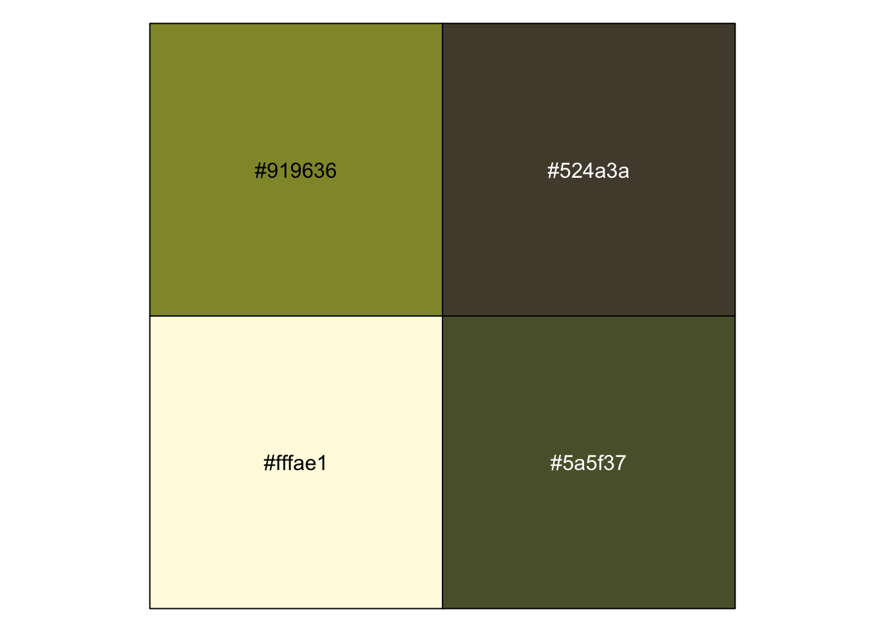
canva_pal("Green fields")(4)[1] "#919636" "#524a3a" "#fffae1" "#5a5f37"canva_pal("Green fields")(4)[3][1] "#fffae1"library(tidyverse)── Attaching core tidyverse packages ──────────────────────── tidyverse 2.0.0 ──
✔ dplyr 1.1.4 ✔ readr 2.1.5
✔ forcats 1.0.0 ✔ stringr 1.5.1
✔ ggplot2 3.5.1 ✔ tibble 3.2.1
✔ lubridate 1.9.4 ✔ tidyr 1.3.1
✔ purrr 1.0.2
── Conflicts ────────────────────────────────────────── tidyverse_conflicts() ──
✖ dplyr::filter() masks stats::filter()
✖ dplyr::lag() masks stats::lag()
ℹ Use the conflicted package (<http://conflicted.r-lib.org/>) to force all conflicts to become errorstheme_set(
theme_hc() +
theme(axis.ticks.y = element_blank(),
plot.background = element_rect(fill = "grey92"))
)
pbar <- .5
theta <- 5
ggplot(data = tibble(x = seq(from = 0, to = 1, by = .01)),
aes(x = x, y = rethinking::dbeta2(x, prob = pbar, theta = theta))) +
geom_area(fill = canva_pal("Green fields")(4)[1]) +
scale_x_continuous("probability space", breaks = c(0, .5, 1)) +
scale_y_continuous(NULL, breaks = NULL) +
ggtitle(expression(The~beta~distribution),
subtitle = expression("Defined in terms of "*mu*" (i.e., pbar) and "*kappa*" (i.e., theta"))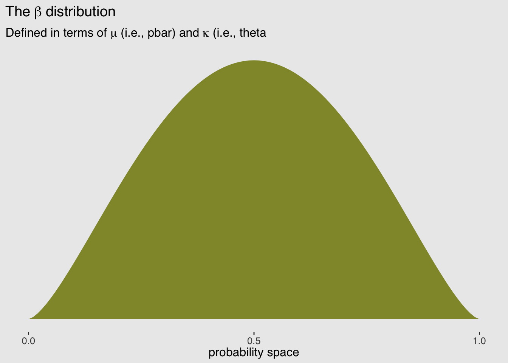
betaABfromMeanKappa <- function(mean, kappa) {
if (mean <= 0 | mean >= 1) stop("must have 0 < mean < 1")
if (kappa <= 0) stop("kappa must be > 0")
a <- mean * kappa
b <- (1.0 - mean) * kappa
return(list(a = a, b = b))
}betaABfromMeanKappa(mean = pbar, kappa = theta)$a
[1] 2.5
$b
[1] 2.5Check that all of this works
ggplot(data = tibble(x = seq(from = 0, to = 1, by = .01)),
aes(x = x, y = dbeta(x, shape1 = 2.5, shape2 = 2.5))) +
geom_area(fill = canva_pal("Green fields")(4)[4]) +
scale_x_continuous("probability space", breaks = c(0, .5, 1)) +
scale_y_continuous(NULL, breaks = NULL) +
ggtitle(expression(The~beta~distribution),
subtitle = expression("This time defined in terms of "*alpha*" and "*beta))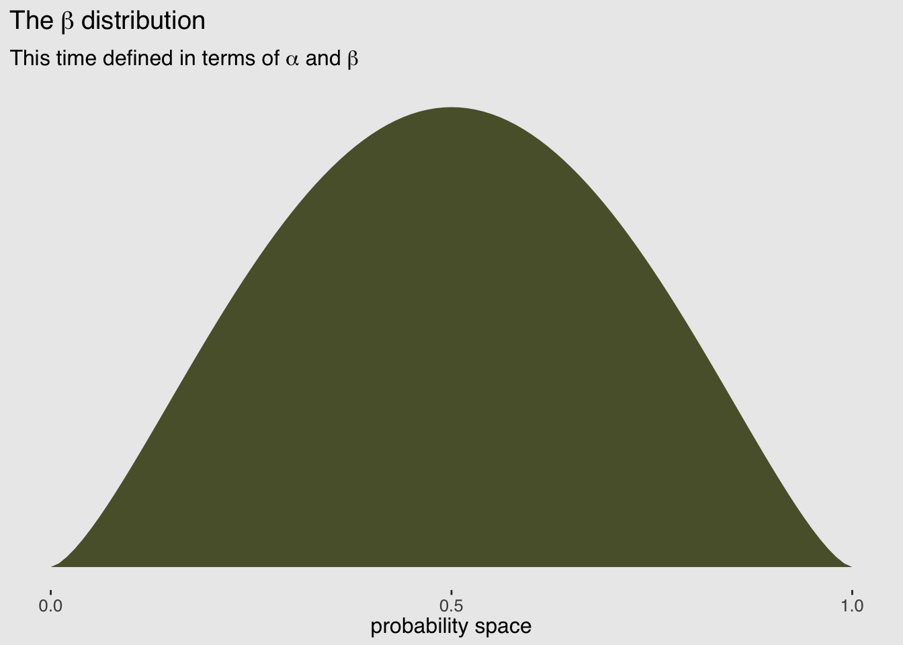
crossing(pbar = c(.25, .5, .75),
theta = c(5, 15, 30)) %>%
expand_grid(x = seq(from = 0, to = 1, length.out = 100)) %>%
mutate(density = rethinking::dbeta2(x, prob = pbar, theta = theta),
mu = str_c("mu == ", pbar %>% str_remove(., "0")),
kappa = factor(str_c("kappa == ", theta),
levels = c("kappa == 30", "kappa == 15", "kappa == 5"))) %>%
ggplot(aes(x = x, y = density)) +
geom_area(fill = canva_pal("Green fields")(4)[4]) +
scale_x_continuous("probability space",
breaks = c(0, .5, 1),
labels = c("0", ".5", "1")) +
scale_y_continuous(NULL, labels = NULL) +
theme(axis.ticks.y = element_blank()) +
facet_grid(kappa ~ mu, labeller = label_parsed)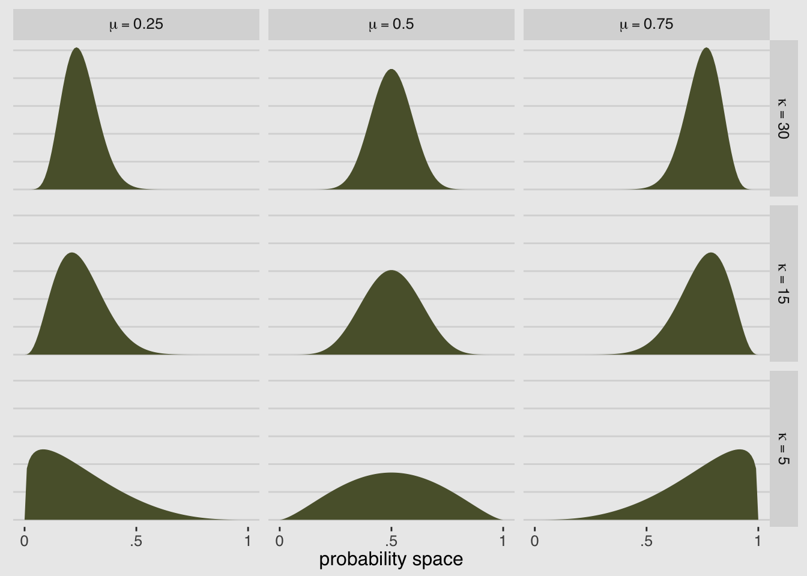
The statistical model we’ll be fitting follows the form \[ \begin{align} \text{admit}_i & \sim \text{BetaBinomial}(n_i, \bar{p}_i, \phi) \\ \text{logit}_i & = \alpha_{gid[i]} \\ \alpha_j & \sim \text{Normal}(0, 1.5) \\ \phi & \sim \text{Exponential}(1). \end{align} \]
Load the data and brms
data(UCBadmit, package = "rethinking")
d <-
UCBadmit %>%
mutate(gid = ifelse(applicant.gender == "male", "1", "2"))
rm(UCBadmit)
library(brms)Loading required package: RcppLoading 'brms' package (version 2.22.0). Useful instructions
can be found by typing help('brms'). A more detailed introduction
to the package is available through vignette('brms_overview').
Attaching package: 'brms'The following object is masked from 'package:stats':
ar- Create custom_family() function to define the name and parameters of the beta-binomial distribution for use in brm()
- Define some functions for Stan which are not defined in Stan itself. We’ll save them as stan_funs.
- We’ll make a stanvar() statement which will allow us to pass our stan_funs to brm()
beta_binomial2 <- custom_family(
"beta_binomial2", dpars = c("mu", "phi"),
links = c("logit", "log"),
lb = c(0, 2), ub = c(1, NA),
type = "int", vars = "vint1[n]"
)
stan_funs <- "
real beta_binomial2_lpmf(int y, real mu, real phi, int T) {
return beta_binomial_lpmf(y | T, mu * phi, (1 - mu) * phi);
}
int beta_binomial2_rng(real mu, real phi, int T) {
return beta_binomial_rng(T, mu * phi, (1 - mu) * phi);
}
"
stanvars <- stanvar(scode = stan_funs, block = "functions")b12.1 <-
brm(data = d,
family = beta_binomial2, # here's our custom likelihood
admit | vint(applications) ~ 0 + gid,
prior = c(prior(normal(0, 1.5), class = b),
prior(exponential(1), class = phi)),
iter = 2000, warmup = 1000, chains = 4, cores = 4,
stanvars = stanvars, # note our stanvars
seed = 12,
file = "fits/b12.01"
)print(b12.1) Family: beta_binomial2
Links: mu = logit; phi = identity
Formula: admit | vint(applications) ~ 0 + gid
Data: d (Number of observations: 12)
Draws: 4 chains, each with iter = 2000; warmup = 1000; thin = 1;
total post-warmup draws = 4000
Regression Coefficients:
Estimate Est.Error l-95% CI u-95% CI Rhat Bulk_ESS Tail_ESS
gid1 -0.44 0.40 -1.24 0.34 1.00 3369 2977
gid2 -0.33 0.41 -1.16 0.45 1.00 3359 2691
Further Distributional Parameters:
Estimate Est.Error l-95% CI u-95% CI Rhat Bulk_ESS Tail_ESS
phi 2.99 0.76 2.04 4.84 1.00 2121 1362
Draws were sampled using sampling(NUTS). For each parameter, Bulk_ESS
and Tail_ESS are effective sample size measures, and Rhat is the potential
scale reduction factor on split chains (at convergence, Rhat = 1).post <- as_draws_df(b12.1)
head(post)# A draws_df: 6 iterations, 1 chains, and 5 variables
b_gid1 b_gid2 phi lprior lp__
1 -0.34 -0.29 2.6 -3.3 -71
2 -1.33 -0.88 4.2 -5.4 -74
3 -0.77 -1.18 2.5 -3.6 -73
4 0.73 0.35 2.2 -3.0 -76
5 0.59 0.43 2.2 -3.0 -76
6 -0.41 -0.70 4.2 -5.0 -71
# ... hidden reserved variables {'.chain', '.iteration', '.draw'}library(tidybayes)
Attaching package: 'tidybayes'The following objects are masked from 'package:brms':
dstudent_t, pstudent_t, qstudent_t, rstudent_tpost %>%
transmute(da = b_gid1 - b_gid2) %>%
mean_qi(.width = .89) %>%
mutate_if(is.double, round, digits = 3)Warning: Dropping 'draws_df' class as required metadata was removed.# A tibble: 1 × 6
da .lower .upper .width .point .interval
<dbl> <dbl> <dbl> <dbl> <chr> <chr>
1 -0.105 -1.01 0.831 0.89 mean qi set.seed(12)
lines <-
post %>%
mutate(p_bar = inv_logit_scaled(b_gid2)) %>%
slice_sample(n = 100) %>%
select(.draw, p_bar, phi) %>%
expand_grid(x = seq(from = 0, to = 1, by = .005)) %>%
mutate(density = pmap_dbl(list(x, p_bar, phi), rethinking::dbeta2))Warning: Dropping 'draws_df' class as required metadata was removed.str(lines)tibble [20,100 × 5] (S3: tbl_df/tbl/data.frame)
$ .draw : int [1:20100] 450 450 450 450 450 450 450 450 450 450 ...
$ p_bar : num [1:20100] 0.288 0.288 0.288 0.288 0.288 ...
$ phi : num [1:20100] 2.59 2.59 2.59 2.59 2.59 ...
$ x : num [1:20100] 0 0.005 0.01 0.015 0.02 0.025 0.03 0.035 0.04 0.045 ...
$ density: num [1:20100] Inf 4.66 3.89 3.5 3.24 ...lines %>%
ggplot(aes(x = x, y = density)) +
stat_function(fun = rethinking::dbeta2,
args = list(prob = mean(inv_logit_scaled(post %>% pull(b_gid2))),
theta = mean(post %>% pull(phi))),
linewidth = 1.5,
color = canva_pal("Green fields")(4)[4]) +
geom_line(aes(group = .draw),
alpha = .2, color = canva_pal("Green fields")(4)[4]) +
scale_y_continuous(NULL, breaks = NULL, limits = c(0, 3)) +
labs(subtitle = "distribution of female admission rates",
x = "probability admit")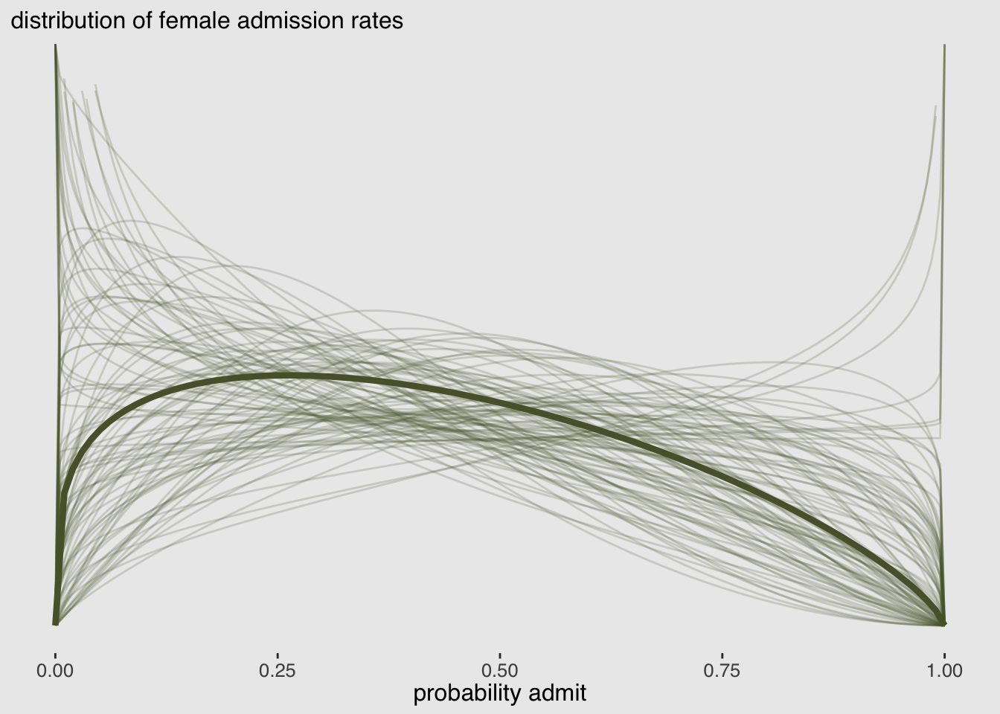
expose_functions(b12.1, vectorize = TRUE)
# required to use predict()
log_lik_beta_binomial2 <- function(i, prep) {
mu <- brms::get_dpar(prep, "mu", i = i)
phi <- brms::get_dpar(prep, "phi", i = i)
trials <- prep$data$vint1[i]
y <- prep$da$Y[i]
beta_binomial2_lpmf(y, mu, phi, trials)
}
posterior_predict_beta_binomial2 <- function(i, prep, ...) {
mu <- brms::get_dpar(prep, "mu", i = i)
phi <- brms::get_dpar(prep, "phi", i = i)
trials <- prep$data$vint1[i]
beta_binomial2_rng(mu, phi, trials)
}
# required to use fitted()
posterior_epred_beta_binomial2 <- function(prep) {
mu <- brms::get_dpar(prep, "mu")
trials <- prep$data$vint1
trials <- matrix(trials, nrow = nrow(mu), ncol = ncol(mu), byrow = TRUE)
mu * trials
}# the prediction intervals
predict(b12.1) %>%
data.frame() %>%
transmute(ll = Q2.5,
ul = Q97.5) %>%
bind_cols(
# the fitted intervals
fitted(b12.1) %>% data.frame(),
# the original data used to fit the model
b12.1$data
) %>%
mutate(case = 1:12) %>%
# plot!
ggplot(aes(x = case)) +
geom_linerange(aes(ymin = ll / applications,
ymax = ul / applications),
color = canva_pal("Green fields")(4)[1],
linewidth = 2.5, alpha = 1/4) +
geom_pointrange(aes(ymin = Q2.5 / applications,
ymax = Q97.5 / applications,
y = Estimate / applications),
color = canva_pal("Green fields")(4)[4],
linewidth = 1/2, shape = 1) +
geom_point(aes(y = admit / applications),
color = canva_pal("Green fields")(4)[2],
size = 2) +
scale_x_continuous(breaks = 1:12) +
scale_y_continuous(breaks = 0:5 / 5, limits = c(0, 1)) +
labs(subtitle = "Posterior validation check",
caption = expression(italic(Note.)*" A = admittance probability"),
y = "A") +
theme(axis.ticks.x = element_blank(),
legend.position = "none")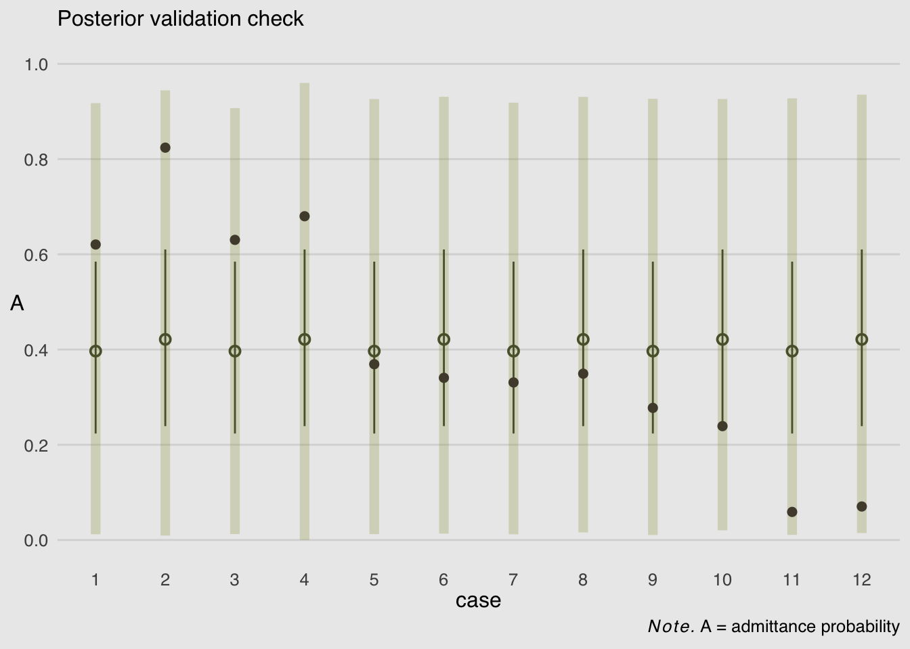
12.1.2 Negative-binomial or gamma-Poisson.
data(Kline, package = "rethinking")
d <-
Kline %>%
mutate(p = rethinking::standardize(log(population)),
contact_id = ifelse(contact == "high", 2L, 1L),
cid = contact)
rm(Kline)
print(d) culture population contact total_tools mean_TU p contact_id
1 Malekula 1100 low 13 3.2 -1.291473310 1
2 Tikopia 1500 low 22 4.7 -1.088550750 1
3 Santa Cruz 3600 low 24 4.0 -0.515764892 1
4 Yap 4791 high 43 5.0 -0.328773359 2
5 Lau Fiji 7400 high 33 5.0 -0.044338980 2
6 Trobriand 8000 high 19 4.0 0.006668287 2
7 Chuuk 9200 high 40 3.8 0.098109204 2
8 Manus 13000 low 28 6.6 0.324317564 1
9 Tonga 17500 high 55 5.4 0.518797917 2
10 Hawaii 275000 low 71 6.6 2.321008320 1
cid
1 low
2 low
3 low
4 high
5 high
6 high
7 high
8 low
9 high
10 lowget_prior(data = d,
family = negbinomial,
total_tools ~ 1) prior class coef group resp dpar nlpar lb ub source
student_t(3, 3.4, 2.5) Intercept default
inv_gamma(0.4, 0.3) shape 0 defaultggplot(data = tibble(x = seq(from = 0, to = 60, by = .1)),
aes(x = x, y = dgamma(x, shape = .01, rate = .01))) +
geom_area(color = "transparent",
fill = canva_pal("Green fields")(4)[2]) +
scale_x_continuous(NULL) +
scale_y_continuous(NULL, breaks = NULL) +
coord_cartesian(xlim = c(0, 50)) +
ggtitle(expression(brms~default~gamma(0.01*", "*0.01)~shape~prior))Warning: Removed 1 row containing non-finite outside the scale range
(`stat_align()`).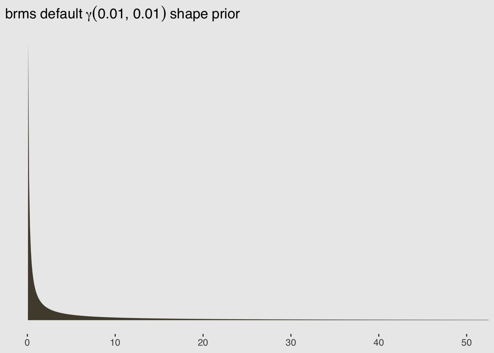
Let’s fit the model
b12.2a <-
brm(data = d,
family = negbinomial,
total_tools ~ 1,
prior = c(prior(normal(3, 0.5), class = Intercept), # beta_0
prior(gamma(.01, .01), class = shape)), # alpha
iter = 2000, warmup = 1000, chains = 4, cores = 4,
seed = 12,
file = "fits/b12.02a")print(b12.2a) Family: negbinomial
Links: mu = log; shape = identity
Formula: total_tools ~ 1
Data: d (Number of observations: 10)
Draws: 4 chains, each with iter = 2000; warmup = 1000; thin = 1;
total post-warmup draws = 4000
Regression Coefficients:
Estimate Est.Error l-95% CI u-95% CI Rhat Bulk_ESS Tail_ESS
Intercept 3.50 0.16 3.18 3.81 1.00 2243 1920
Further Distributional Parameters:
Estimate Est.Error l-95% CI u-95% CI Rhat Bulk_ESS Tail_ESS
shape 4.82 2.55 1.41 10.85 1.00 2343 1976
Draws were sampled using sampling(NUTS). For each parameter, Bulk_ESS
and Tail_ESS are effective sample size measures, and Rhat is the potential
scale reduction factor on split chains (at convergence, Rhat = 1).p <-
predict(b12.2a, summary = F)
p %>% str() num [1:4000, 1:10] 35 68 35 25 8 53 49 46 32 35 ...
- attr(*, "dimnames")=List of 2
..$ : NULL
..$ : NULLp %>%
data.frame() %>%
set_names(d$culture) %>%
pivot_longer(everything(),
names_to = "culture",
values_to = "lambda") %>%
ggplot(aes(x = lambda)) +
geom_density(color = "transparent", fill = canva_pal("Green fields")(4)[2]) +
scale_x_continuous(expression(lambda["[culture]"]),
breaks = 0:2 * 100) +
scale_y_continuous(NULL, breaks = NULL) +
coord_cartesian(xlim = c(0, 210)) +
facet_wrap(~ culture, nrow = 2)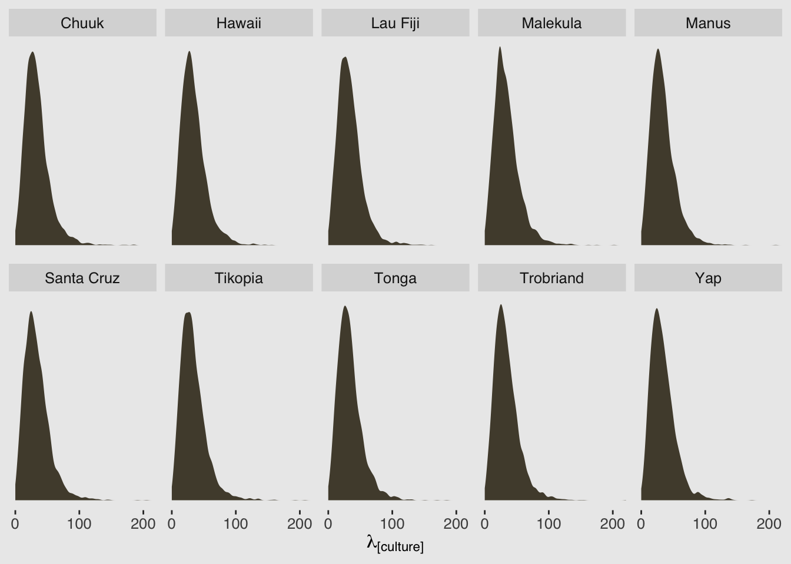
post <- as_draws_df(b12.2a)
post %>%
mutate(mu = exp(b_Intercept),
alpha = shape) %>%
pivot_longer(mu:alpha, names_to = "parameter") %>%
ggplot(aes(x = value)) +
geom_density(color = "transparent",
fill = canva_pal("Green fields")(4)[2]) +
scale_y_continuous(NULL, breaks = NULL) +
labs(title = "Behold our gamma parameters!",
x = "posterior") +
facet_wrap(~ parameter, scales = "free", labeller = label_parsed)Warning: Dropping 'draws_df' class as required metadata was removed.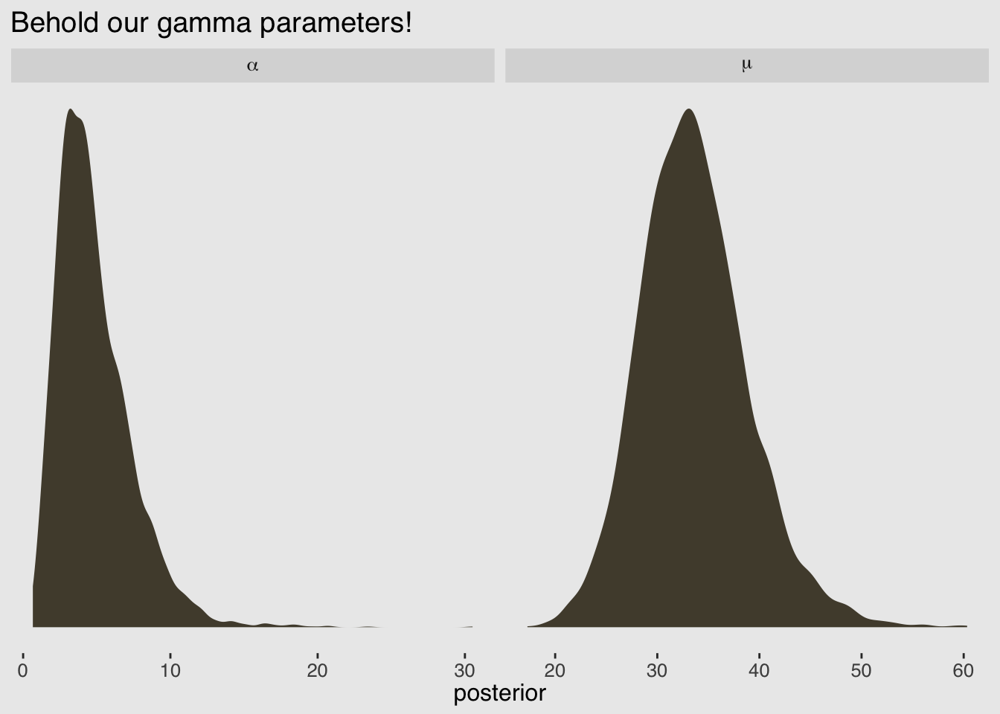
post %>%
mutate(mu = exp(b_Intercept),
alpha = shape) %>%
mutate(theta = mu / alpha) %>%
ggplot(aes(x = theta)) +
geom_density(color = "transparent",
fill = canva_pal("Green fields")(4)[2]) +
scale_y_continuous(NULL, breaks = NULL) +
labs(subtitle = expression(We~define~the~scale~as~theta == mu/alpha),
x = "posterior") +
coord_cartesian(xlim = c(0, 40))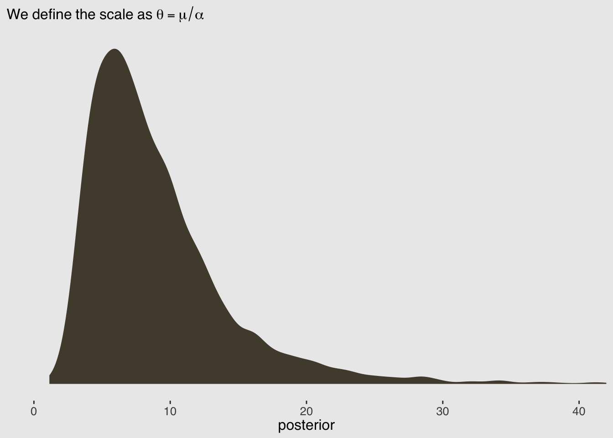
set.seed(12)
# wrangle to get 200 draws
post %>%
mutate(alpha = shape,
theta = exp(b_Intercept) / shape) %>%
slice_sample(n = 200) %>%
expand_grid(x = 0:250)%>%
mutate(density = dgamma(x, shape = alpha, scale = theta)) %>%
# plot
ggplot(aes(x = x, y = density)) +
geom_line(aes(group = .draw),
alpha = .1, color = canva_pal("Green fields")(4)[4]) +
scale_y_continuous(NULL, breaks = NULL) +
labs(subtitle = expression("200 credible gamma densities for "*lambda),
x = expression(lambda)) +
coord_cartesian(xlim = c(0, 170),
ylim = c(0, 0.045))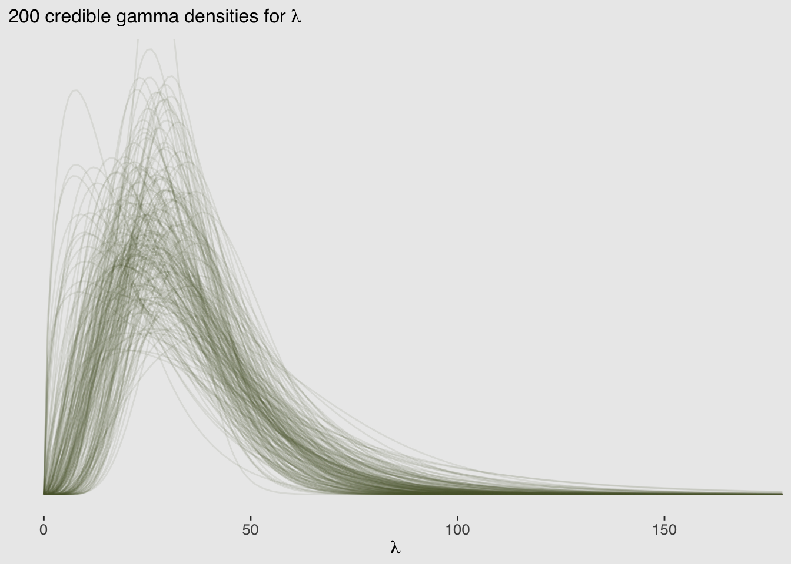
b12.2b <-
brm(data = d,
family = negbinomial(link = "identity"),
bf(total_tools ~ exp(b0) * population^b1 / g,
b0 + b1 ~ 0 + cid,
g ~ 1,
nl = TRUE),
prior = c(prior(normal(1, 1), nlpar = b0),
prior(exponential(1), nlpar = b1, lb = 0),
prior(exponential(1), nlpar = g, lb = 0),
prior(exponential(1), class = shape)),
iter = 2000, warmup = 1000, chains = 4, cores = 4,
seed = 12,
file = "fits/b12.02b") print(b12.2b) Family: negbinomial
Links: mu = identity; shape = identity
Formula: total_tools ~ exp(b0) * population^b1/g
b0 ~ 0 + cid
b1 ~ 0 + cid
g ~ 1
Data: d (Number of observations: 10)
Draws: 4 chains, each with iter = 2000; warmup = 1000; thin = 1;
total post-warmup draws = 4000
Regression Coefficients:
Estimate Est.Error l-95% CI u-95% CI Rhat Bulk_ESS Tail_ESS
b0_cidhigh 1.08 0.95 -0.86 2.90 1.00 2228 2166
b0_cidlow 0.92 0.82 -0.74 2.54 1.00 2262 1997
b1_cidhigh 0.25 0.13 0.02 0.51 1.00 1460 918
b1_cidlow 0.24 0.10 0.05 0.44 1.00 1366 1103
g_Intercept 1.03 0.84 0.13 3.29 1.00 1567 1449
Further Distributional Parameters:
Estimate Est.Error l-95% CI u-95% CI Rhat Bulk_ESS Tail_ESS
shape 3.73 1.66 1.30 7.72 1.00 2203 2063
Draws were sampled using sampling(NUTS). For each parameter, Bulk_ESS
and Tail_ESS are effective sample size measures, and Rhat is the potential
scale reduction factor on split chains (at convergence, Rhat = 1).b12.2b <- add_criterion(b12.2b, "loo")
loo(b12.2b)
Computed from 4000 by 10 log-likelihood matrix.
Estimate SE
elpd_loo -41.4 1.7
p_loo 1.2 0.3
looic 82.7 3.4
------
MCSE of elpd_loo is 0.0.
MCSE and ESS estimates assume MCMC draws (r_eff in [0.4, 1.0]).
All Pareto k estimates are good (k < 0.7).
See help('pareto-k-diagnostic') for details.d %>%
mutate(k = b12.2b$criteria$loo$diagnostics$pareto_k) %>%
dplyr::filter(k > .5) %>%
select(culture, k) culture k
1 Hawaii 0.5008668b11.11 <- readRDS("fits/b11.11.rds")# the new data
nd <-
distinct(d, cid) %>%
expand_grid(population = seq(from = 0, to = 300000, length.out = 100))
p1 <-
# compute the expected trajectories
fitted(b11.11,
newdata = nd,
probs = c(.055, .945)) %>%
data.frame() %>%
bind_cols(nd) %>%
# plot
ggplot(aes(x = population, group = cid, color = cid)) +
geom_smooth(aes(y = Estimate, ymin = Q5.5, ymax = Q94.5, fill = cid),
stat = "identity",
alpha = 1/4, linewidth = 1/2) +
geom_point(data = bind_cols(d, b11.11$criteria$loo$diagnostics),
aes(y = total_tools, size = pareto_k),
alpha = 4/5) +
labs(subtitle = "pure Poisson model",
y = "total tools")# for the annotation
text <-
distinct(d, cid) %>%
mutate(population = c(150000, 110000),
total_tools = c(57, 69),
label = str_c(cid, " contact"))
p2 <-
fitted(b12.2b,
newdata = nd,
probs = c(.055, .945)) %>%
data.frame() %>%
bind_cols(nd) %>%
ggplot(aes(x = population, group = cid, color = cid)) +
geom_smooth(aes(y = Estimate, ymin = Q5.5, ymax = Q94.5, fill = cid),
stat = "identity",
alpha = 1/4, linewidth = 1/2) +
geom_point(data = bind_cols(d, b12.2b$criteria$loo$diagnostics),
aes(y = total_tools, size = pareto_k),
alpha = 4/5) +
geom_text(data = text,
aes(y = total_tools, label = label)) +
scale_y_continuous(NULL, labels = NULL) +
labs(subtitle = "gamma-Poisson model")library(patchwork)
(p1 | p2) &
scale_fill_manual(values = canva_pal("Green fields")(4)[c(4, 1)]) &
scale_color_manual(values = canva_pal("Green fields")(4)[c(4, 1)]) &
scale_size(range = c(2, 5)) &
scale_x_continuous("population", breaks = c(0, 50000, 150000, 250000)) &
coord_cartesian(xlim = range(d$population),
ylim = range(d$total_tools)) &
theme(axis.ticks = element_blank(),
legend.position = "none")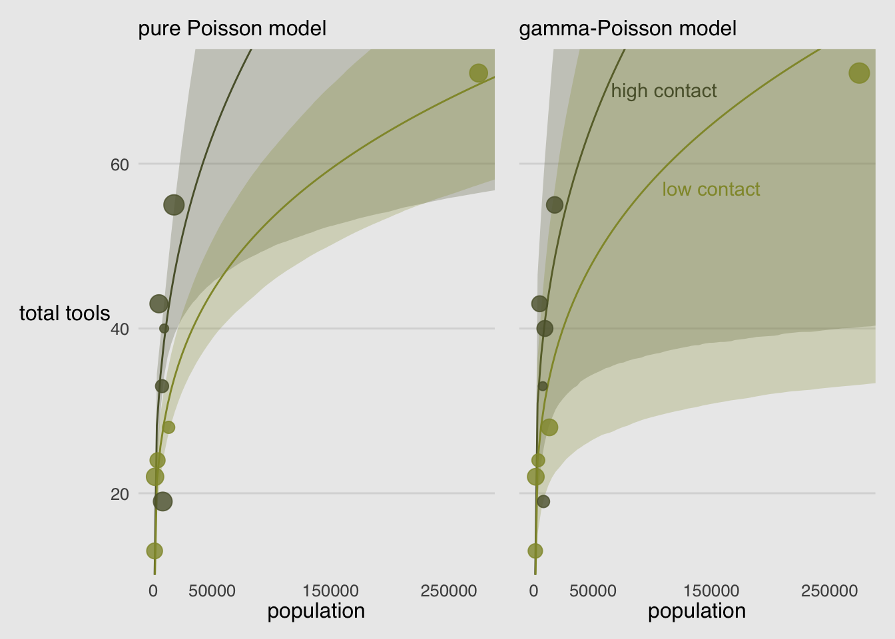
predict(b12.2b,
summary = F) %>%
data.frame() %>%
set_names(d$culture) %>%
pivot_longer(everything(),
names_to = "culture",
values_to = "lambda") %>%
left_join(d, by = "culture") %>%
ggplot(aes(x = lambda, y = 0)) +
stat_halfeye(point_interval = mean_qi, .width = .5,
fill = canva_pal("Green fields")(4)[2],
color = canva_pal("Green fields")(4)[1]) +
geom_vline(aes(xintercept = total_tools),
color = canva_pal("Green fields")(4)[3]) +
scale_x_continuous(expression(lambda["[culture]"]), breaks = 0:2 * 100) +
scale_y_continuous(NULL, breaks = NULL) +
coord_cartesian(xlim = c(0, 210)) +
facet_wrap(~ culture, nrow = 2)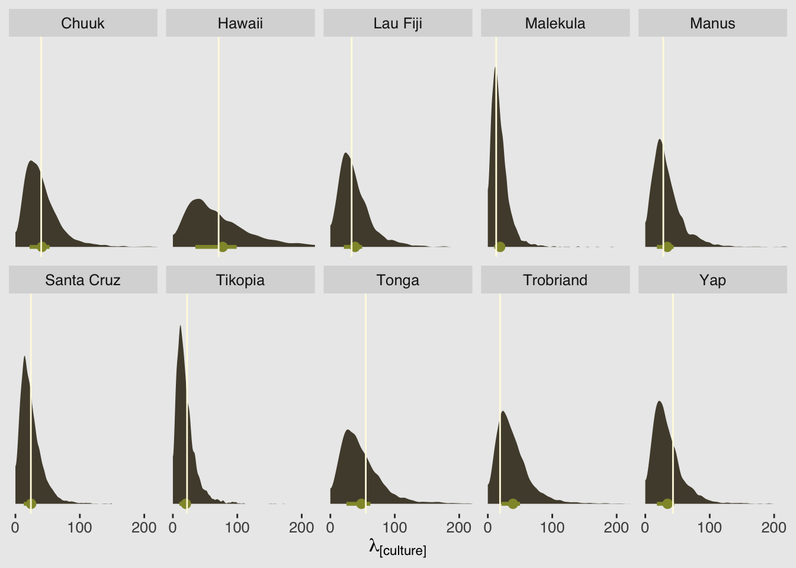
12.1.3 Over-dispersion, entropy, and information criteria.
12.2 Zero-inflated outcomes
12.2.0.1 Rethinking: Breaking the law.
12.2.1 Example: Zero-inflated Poisson.
# define parameters
prob_drink <- 0.2 # 20% of days
rate_work <- 1 # average 1 manuscript per day
# sample one year of production
n <- 365
# simulate days monks drink
set.seed(365)
drink <- rbinom(n, size = 1, prob = prob_drink)
# simulate manuscripts completed
y <- (1 - drink) * rpois(n, lambda = rate_work)d <-
tibble(drink = factor(drink, levels = 1:10),
y = y)
d %>%
ggplot(aes(x = y)) +
geom_histogram(aes(fill = drink), binwidth = 1,
linewidth = 1/10, color = "grey92") +
scale_fill_manual(values = canva_pal("Green fields")(4)[1:2]) +
xlab("Manuscripts completed") +
theme(legend.position = "none")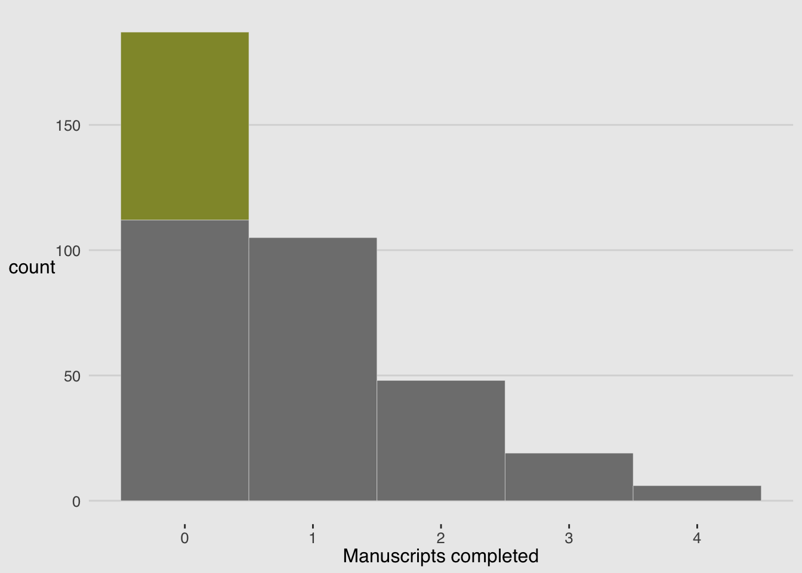
With these data, the likelihood of observing zero on y, (i.e., the likelihood zero manuscripts were completed on a given occasion) is \[ \begin{align} \text{Pr}(0|p, \lambda) & = \text{Pr}(drink|p) + \text{Pr}(work|p) \times \text{Pr}(0|\lambda) \\ & = p + (1 - p) \text{exp}(-\lambda). \end{align} \]
Letting \(p\) be the probability \(y\) is zero and \(\lambda\) be the shape of the distribution, the zero-inflated Poisson (ZIPoisson) regression model might take the basic form \[ \begin{align} y_i & \sim \text{ZIPoisson}(p_i, \lambda_i) \\ \text{logit}(p_i) & = \alpha_p + \beta_p x_i \\ \text{log}(\lambda_i) & = \alpha_\lambda + \beta_\lambda x_i, \end{align} \]
b12.3 <-
brm(data = d,
family = zero_inflated_poisson,
y ~ 1,
prior = c(prior(normal(1, 0.5), class = Intercept),
prior(beta(2, 6), class = zi)), # the brms default is beta(1, 1)
iter = 2000, warmup = 1000, chains = 4, cores = 4,
seed = 12,
file = "fits/b12.03")priors <-
c(prior(beta(1, 1)),
prior(beta(2, 6)))
priors %>%
parse_dist(prior) prior class coef group resp dpar nlpar lb ub source .dist .args
1 beta(1, 1) b <NA> <NA> user beta 1, 1
2 beta(2, 6) b <NA> <NA> user beta 2, 6
.dist_obj
1 beta(1, 1)
2 beta(2, 6)priors %>%
parse_dist(prior) %>%
ggplot(aes(y = prior, dist = .dist, args = .args, fill = prior)) +
stat_dist_halfeye(,width = .95) +
scale_fill_manual(values = canva_pal("Green fields")(4)[c(4, 1)]) +
scale_x_continuous("zi", breaks = c(0, .5, 1)) +
scale_y_discrete(expand = expansion(add = .1)) +
ylab(NULL) +
theme(legend.position = "none")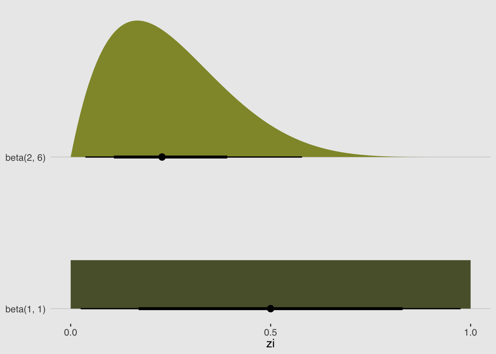
We might write our statistical model for b12.3 as \[ \begin{align} y_i & \sim \text{ZIPoisson}(p, \lambda) \\ p & = \alpha_p \\ \text{log} \lambda & = \alpha_\lambda \\ \alpha_p & \sim \text{Beta}(2, 6) \\ \alpha_\lambda & \sim \text{Normal}(1, 0.5). \end{align} \]
Here’s that exponentiated \(\alpha_\lambda\)
fixef(b12.3) Estimate Est.Error Q2.5 Q97.5
Intercept 0.02524199 0.08707469 -0.1510895 0.1869279fixef(b12.3)[1, ] %>% exp() Estimate Est.Error Q2.5 Q97.5
1.0255633 1.0909782 0.8597707 1.2055403 12.2.1.1 Overthinking: Zero-inflated Poisson calculations in Stan.
b12.3$model// generated with brms 2.22.0
functions {
/* zero-inflated poisson log-PDF of a single response
* Args:
* y: the response value
* lambda: mean parameter of the poisson distribution
* zi: zero-inflation probability
* Returns:
* a scalar to be added to the log posterior
*/
real zero_inflated_poisson_lpmf(int y, real lambda, real zi) {
if (y == 0) {
return log_sum_exp(bernoulli_lpmf(1 | zi),
bernoulli_lpmf(0 | zi) +
poisson_lpmf(0 | lambda));
} else {
return bernoulli_lpmf(0 | zi) +
poisson_lpmf(y | lambda);
}
}
/* zero-inflated poisson log-PDF of a single response
* logit parameterization of the zero-inflation part
* Args:
* y: the response value
* lambda: mean parameter of the poisson distribution
* zi: linear predictor for zero-inflation part
* Returns:
* a scalar to be added to the log posterior
*/
real zero_inflated_poisson_logit_lpmf(int y, real lambda, real zi) {
if (y == 0) {
return log_sum_exp(bernoulli_logit_lpmf(1 | zi),
bernoulli_logit_lpmf(0 | zi) +
poisson_lpmf(0 | lambda));
} else {
return bernoulli_logit_lpmf(0 | zi) +
poisson_lpmf(y | lambda);
}
}
/* zero-inflated poisson log-PDF of a single response
* log parameterization for the poisson part
* Args:
* y: the response value
* eta: linear predictor for poisson distribution
* zi: zero-inflation probability
* Returns:
* a scalar to be added to the log posterior
*/
real zero_inflated_poisson_log_lpmf(int y, real eta, real zi) {
if (y == 0) {
return log_sum_exp(bernoulli_lpmf(1 | zi),
bernoulli_lpmf(0 | zi) +
poisson_log_lpmf(0 | eta));
} else {
return bernoulli_lpmf(0 | zi) +
poisson_log_lpmf(y | eta);
}
}
/* zero-inflated poisson log-PDF of a single response
* log parameterization for the poisson part
* logit parameterization of the zero-inflation part
* Args:
* y: the response value
* eta: linear predictor for poisson distribution
* zi: linear predictor for zero-inflation part
* Returns:
* a scalar to be added to the log posterior
*/
real zero_inflated_poisson_log_logit_lpmf(int y, real eta, real zi) {
if (y == 0) {
return log_sum_exp(bernoulli_logit_lpmf(1 | zi),
bernoulli_logit_lpmf(0 | zi) +
poisson_log_lpmf(0 | eta));
} else {
return bernoulli_logit_lpmf(0 | zi) +
poisson_log_lpmf(y | eta);
}
}
// zero-inflated poisson log-CCDF and log-CDF functions
real zero_inflated_poisson_lccdf(int y, real lambda, real zi) {
return bernoulli_lpmf(0 | zi) + poisson_lccdf(y | lambda);
}
real zero_inflated_poisson_lcdf(int y, real lambda, real zi) {
return log1m_exp(zero_inflated_poisson_lccdf(y | lambda, zi));
}
}
data {
int<lower=1> N; // total number of observations
array[N] int Y; // response variable
int prior_only; // should the likelihood be ignored?
}
transformed data {
}
parameters {
real Intercept; // temporary intercept for centered predictors
real<lower=0,upper=1> zi; // zero-inflation probability
}
transformed parameters {
real lprior = 0; // prior contributions to the log posterior
lprior += normal_lpdf(Intercept | 1, 0.5);
lprior += beta_lpdf(zi | 2, 6);
}
model {
// likelihood including constants
if (!prior_only) {
// initialize linear predictor term
vector[N] mu = rep_vector(0.0, N);
mu += Intercept;
for (n in 1:N) {
target += zero_inflated_poisson_log_lpmf(Y[n] | mu[n], zi);
}
}
// priors including constants
target += lprior;
}
generated quantities {
// actual population-level intercept
real b_Intercept = Intercept;
}12.3 Ordered categorical outcomes
12.3.1 Example: Moral intution.
data(Trolley, package = "rethinking")
d <- Trolley
rm(Trolley)glimpse(d)Rows: 9,930
Columns: 12
$ case <fct> cfaqu, cfbur, cfrub, cibox, cibur, cispe, fkaqu, fkboa, fkbo…
$ response <int> 4, 3, 4, 3, 3, 3, 5, 4, 4, 4, 4, 4, 4, 5, 4, 4, 4, 4, 4, 3, …
$ order <int> 2, 31, 16, 32, 4, 9, 29, 12, 23, 22, 27, 19, 14, 3, 18, 15, …
$ id <fct> 96;434, 96;434, 96;434, 96;434, 96;434, 96;434, 96;434, 96;4…
$ age <int> 14, 14, 14, 14, 14, 14, 14, 14, 14, 14, 14, 14, 14, 14, 14, …
$ male <int> 0, 0, 0, 0, 0, 0, 0, 0, 0, 0, 0, 0, 0, 0, 0, 0, 0, 0, 0, 0, …
$ edu <fct> Middle School, Middle School, Middle School, Middle School, …
$ action <int> 0, 0, 0, 0, 0, 0, 1, 1, 1, 1, 1, 1, 1, 0, 0, 0, 0, 0, 1, 1, …
$ intention <int> 0, 0, 0, 1, 1, 1, 0, 0, 0, 0, 0, 0, 0, 0, 0, 0, 0, 0, 1, 1, …
$ contact <int> 1, 1, 1, 1, 1, 1, 0, 0, 0, 0, 0, 0, 0, 0, 0, 0, 0, 0, 0, 0, …
$ story <fct> aqu, bur, rub, box, bur, spe, aqu, boa, box, bur, car, spe, …
$ action2 <int> 1, 1, 1, 1, 1, 1, 1, 1, 1, 1, 1, 1, 1, 0, 0, 0, 0, 0, 1, 1, …d %>%
distinct(id) %>%
count() n
1 33112.3.2 Describing an ordered distribution with. intercepts.
p1 <-
d %>%
ggplot(aes(x = response, fill = after_stat(x))) +
geom_histogram(binwidth = 1/4, linewidth = 0) +
scale_fill_gradient(low = canva_pal("Green fields")(4)[4],
high = canva_pal("Green fields")(4)[1]) +
scale_x_continuous(breaks = 1:7) +
theme(axis.ticks = element_blank(),
axis.title.y = element_text(angle = 90),
legend.position = "none")
p1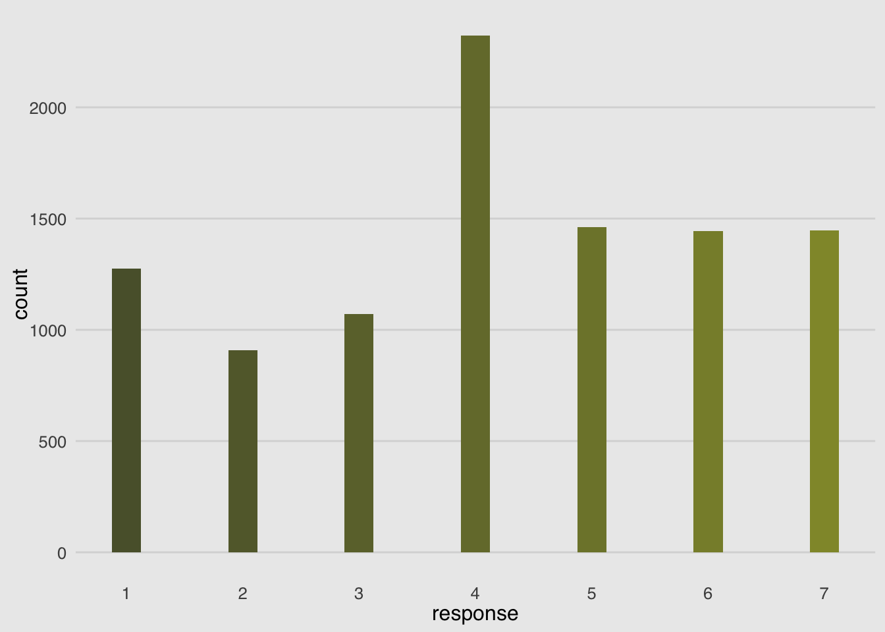
Our cumulative proportion plot, Figure 12.4.b, will require some pre-plot wrangling.
p2 <-
d %>%
count(response) %>%
mutate(pr_k = n / nrow(d),
cum_pr_k = cumsum(pr_k)) %>%
ggplot(aes(x = response, y = cum_pr_k,
fill = response)) +
geom_line(color = canva_pal("Green fields")(4)[2]) +
geom_point(shape = 21, color = "grey92",
size = 2.5, stroke = 1) +
scale_fill_gradient(low = canva_pal("Green fields")(4)[4],
high = canva_pal("Green fields")(4)[1]) +
scale_x_continuous(breaks = 1:7) +
scale_y_continuous("cumulative proportion",
breaks = c(0, .5, 1), limits = c(0, 1.001)) +
theme(axis.ticks = element_blank(),
axis.title.y = element_text(angle = 90),
legend.position = "none")
p2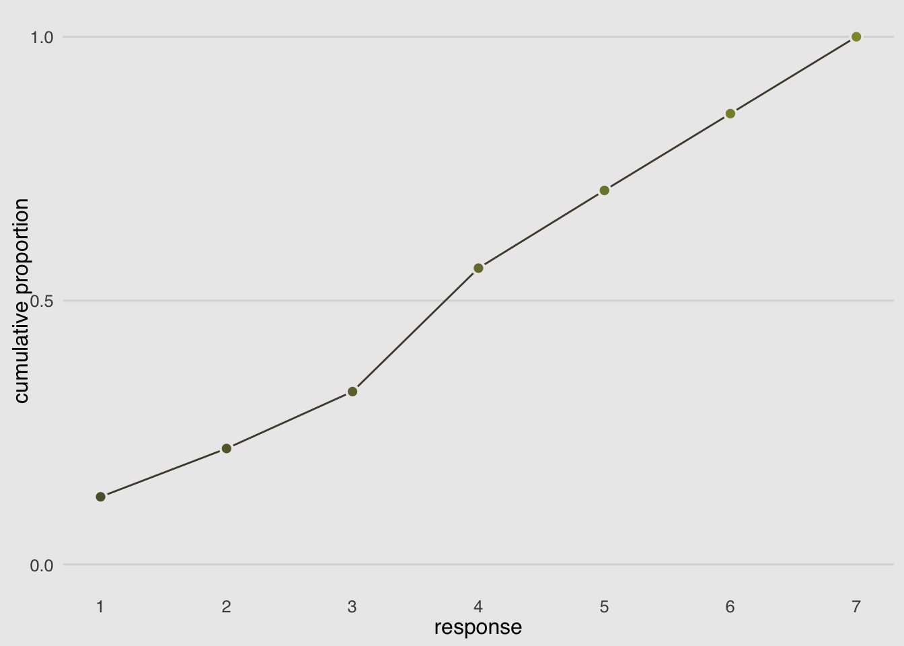
logit <- function(x) log(x / (1 - x)) # convenience function
d %>%
count(response) %>%
mutate(pr_k = n / nrow(d),
cum_pr_k = cumsum(n / nrow(d))) %>%
mutate(alpha = logit(cum_pr_k) %>% round(digits = 2))Warning: There was 1 warning in `mutate()`.
ℹ In argument: `alpha = logit(cum_pr_k) %>% round(digits = 2)`.
Caused by warning in `log()`:
! NaNs produced response n pr_k cum_pr_k alpha
1 1 1274 0.12829809 0.1282981 -1.92
2 2 909 0.09154079 0.2198389 -1.27
3 3 1071 0.10785498 0.3276939 -0.72
4 4 2323 0.23393756 0.5616314 0.25
5 5 1462 0.14723061 0.7088620 0.89
6 6 1445 0.14551863 0.8543807 1.77
7 7 1446 0.14561934 1.0000000 NaNp3 <-
d %>%
count(response) %>%
mutate(cum_pr_k = cumsum(n / nrow(d))) %>%
dplyr::filter(response < 7) %>%
# we can do the logit() conversion right in ggplot()
ggplot(aes(x = response, y = logit(cum_pr_k),
fill = response)) +
geom_line(color = canva_pal("Green fields")(4)[2]) +
geom_point(shape = 21, colour = "grey92", size = 2.5,
stroke = 1) +
scale_fill_gradient(low = canva_pal("Green fields")(4)[4],
high = canva_pal("Green fields")(4)[1]) +
scale_x_continuous(breaks = 1:7, limits = c(1, 7)) +
ylab("log-cumulative-odds") +
theme(axis.ticks = element_blank(),
axis.title.y = element_text(angle = 90),
legend.position = "none")
p3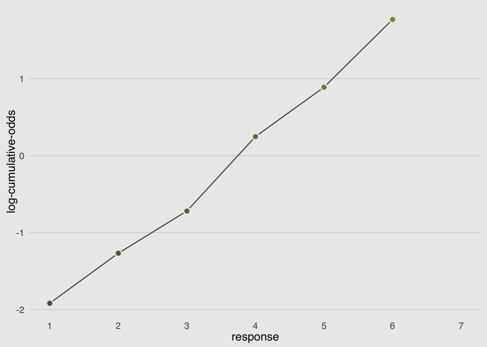
(p1 | p2 | p3) +
plot_annotation(title = "Re-describing a discrete distribution using log-cumulative-odds.")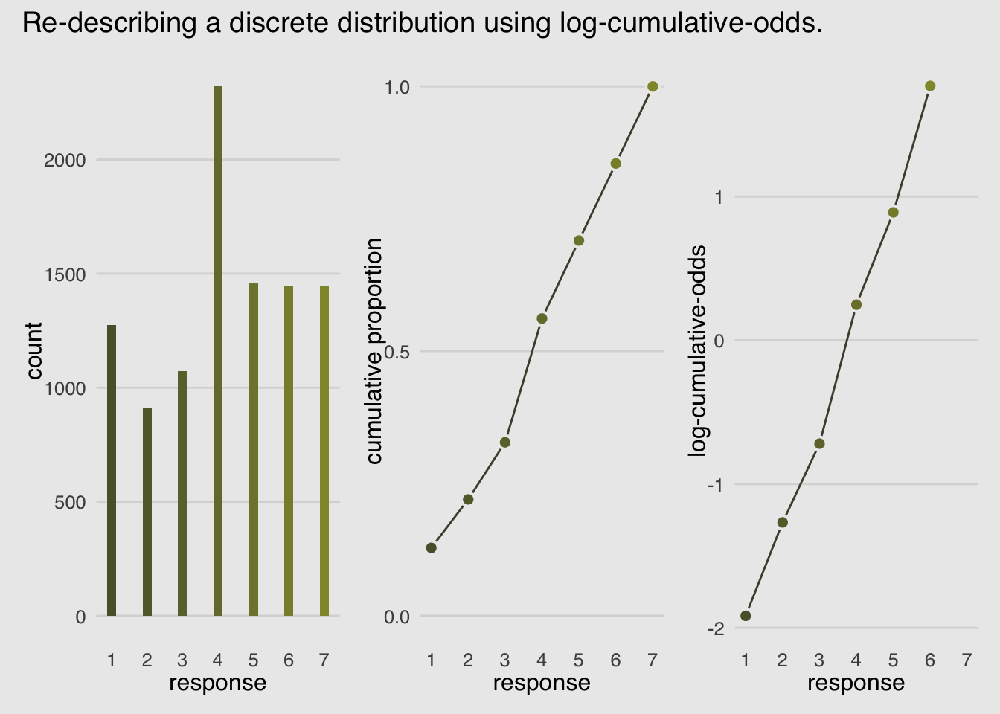
# primary data
d_plot <-
d %>%
count(response) %>%
mutate(pr_k = n / nrow(d),
cum_pr_k = cumsum(n / nrow(d))) %>%
mutate(discrete_probability = ifelse(response == 1, cum_pr_k, cum_pr_k - pr_k))
# annotation
text <-
tibble(text = 1:7,
response = seq(from = 1.25, to = 7.25, by = 1),
cum_pr_k = d_plot$cum_pr_k - .065)
d_plot %>%
ggplot(aes(x = response, y = cum_pr_k,
color = cum_pr_k, fill = cum_pr_k)) +
geom_line(color = canva_pal("Green fields")(4)[1]) +
geom_point(shape = 21, colour = "grey92", size = 2.5,
stroke = 1) +
geom_linerange(aes(ymin = 0, ymax = cum_pr_k),
alpha = 1/2,
color = canva_pal("Green fields")(4)[1]) +
geom_linerange(aes(x = response + .025,
ymin = ifelse(response == 1, 0,
discrete_probability),
ymax = cum_pr_k),
color = "black") +
# number annotation
geom_text(data = text,
aes(label = text),
size = 4) +
scale_fill_gradient(low = canva_pal("Green fields")(4)[4],
high = canva_pal("Green fields")(4)[1]) +
scale_color_gradient(low = canva_pal("Green fields")(4)[4],
high = canva_pal("Green fields")(4)[1]) +
scale_x_continuous(breaks = 1:7) +
scale_y_continuous("cumulative proportion",
breaks = c(0, .5, 1),
limits = c(0, 1.001)) +
theme(axis.ticks = element_blank(),
axis.title.y = element_text(angle = 90),
legend.position = "none")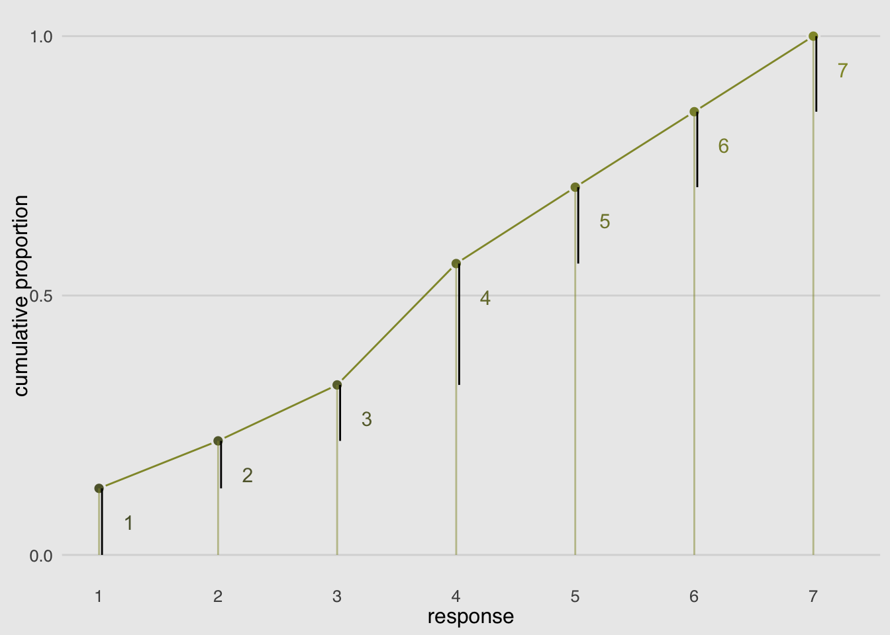
A compact way to express the formula for this first type of statistical model is \[ \begin{align} \text{response}_i & \sim \text{Categorical}(p) \\ \text{logit}(p_k) & = \alpha_k - \phi \\ \phi & = 0 \\ \alpha_k & \sim \text{Normal}(0, 1.5), \end{align} \]
# define the start values
inits <- list(`Intercept[1]` = -2,
`Intercept[2]` = -1,
`Intercept[3]` = 0,
`Intercept[4]` = 1,
`Intercept[5]` = 2,
`Intercept[6]` = 2.5)
inits_list <- list(inits, inits, inits, inits)
b12.4 <-
brm(data = d,
family = cumulative,
response ~ 1,
prior(normal(0, 1.5), class = Intercept),
iter = 2000, warmup = 1000, chains = 4, cores = 4,
init = inits_list, # here we add our start values
file = "fits/b12.04")print(b12.4) Family: cumulative
Links: mu = logit; disc = identity
Formula: response ~ 1
Data: d (Number of observations: 9930)
Draws: 4 chains, each with iter = 2000; warmup = 1000; thin = 1;
total post-warmup draws = 4000
Regression Coefficients:
Estimate Est.Error l-95% CI u-95% CI Rhat Bulk_ESS Tail_ESS
Intercept[1] -1.92 0.03 -1.98 -1.86 1.00 2896 2848
Intercept[2] -1.27 0.02 -1.31 -1.22 1.00 3892 3165
Intercept[3] -0.72 0.02 -0.76 -0.68 1.00 4693 3509
Intercept[4] 0.25 0.02 0.21 0.29 1.00 4757 3518
Intercept[5] 0.89 0.02 0.85 0.93 1.00 5026 3390
Intercept[6] 1.77 0.03 1.71 1.83 1.00 5107 3727
Further Distributional Parameters:
Estimate Est.Error l-95% CI u-95% CI Rhat Bulk_ESS Tail_ESS
disc 1.00 0.00 1.00 1.00 NA NA NA
Draws were sampled using sampling(NUTS). For each parameter, Bulk_ESS
and Tail_ESS are effective sample size measures, and Rhat is the potential
scale reduction factor on split chains (at convergence, Rhat = 1).b12.4 %>%
fixef() %>%
inv_logit_scaled() %>%
round(digits = 3) Estimate Est.Error Q2.5 Q97.5
Intercept[1] 0.128 0.508 0.122 0.135
Intercept[2] 0.220 0.506 0.212 0.228
Intercept[3] 0.328 0.505 0.319 0.337
Intercept[4] 0.562 0.505 0.552 0.571
Intercept[5] 0.709 0.506 0.700 0.718
Intercept[6] 0.855 0.507 0.847 0.861as_draws_df(b12.4) %>%
mutate_at(vars(starts_with("b_")), inv_logit_scaled) %>%
pivot_longer(starts_with("b_")) %>%
group_by(name) %>%
summarise(mean = mean(value),
sd = sd(value),
ll = quantile(value, probs = .025),
ul = quantile(value, probs = .975))Warning: Dropping 'draws_df' class as required metadata was removed.# A tibble: 6 × 5
name mean sd ll ul
<chr> <dbl> <dbl> <dbl> <dbl>
1 b_Intercept[1] 0.128 0.00338 0.122 0.135
2 b_Intercept[2] 0.220 0.00426 0.212 0.228
3 b_Intercept[3] 0.328 0.00469 0.319 0.337
4 b_Intercept[4] 0.562 0.00492 0.552 0.571
5 b_Intercept[5] 0.709 0.00456 0.700 0.718
6 b_Intercept[6] 0.854 0.00357 0.847 0.861d_plot %>%
select(response, cum_pr_k) response cum_pr_k
1 1 0.1282981
2 2 0.2198389
3 3 0.3276939
4 4 0.5616314
5 5 0.7088620
6 6 0.8543807
7 7 1.0000000fixef(b12.4) %>%
data.frame() %>%
rownames_to_column("intercept") %>%
mutate(response = str_extract(intercept, "\\d") %>% as.double()) %>%
ggplot(aes(x = response, y = Estimate,
ymin = Q2.5, ymax = Q97.5,
fill = response)) +
geom_line(color = canva_pal("Green fields")(4)[2]) +
geom_point(shape = 21, color = "grey92",
size = 1.5, stroke = 1) +
geom_linerange(color = canva_pal("Green fields")(4)[2]) +
scale_fill_gradient(low = canva_pal("Green fields")(4)[4],
high = canva_pal("Green fields")(4)[1]) +
scale_x_continuous(breaks = 1:7, limits = c(1, 7)) +
ylab("log-cumulative-odds") +
theme(axis.ticks = element_blank(),
axis.title.y = element_text(angle = 90),
legend.position = "none")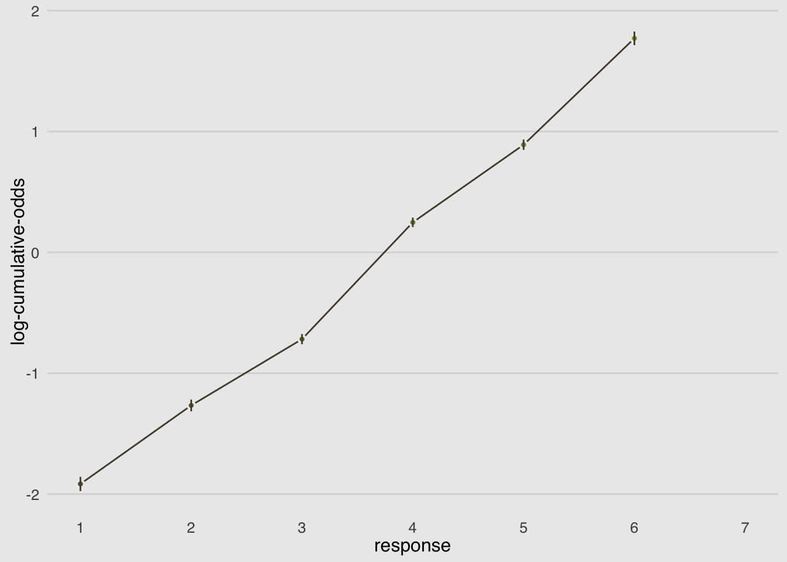
12.3.3 Adding predictor variables.
Now we define the generic linear model as \(\phi_i = \beta x_i\). Accordingly, the formula for our cumulative logit model becomes \[ \begin{align} \text{log} \frac{\text{Pr}(y_i \le k)}{1 - \text{Pr}(y_i \le K)} & = \alpha_k - \phi_i \\ \phi_i & = \beta x_i. \end{align} \]
logistic <- function(x) {
p <- 1 / (1 + exp(-x))
p <- ifelse(x == Inf, 1, p)
p
}
# now we get down to it
dordlogit <- function(x, phi, a, log = FALSE) {
a <- c(as.numeric(a), Inf)
p <- logistic(a[x] - phi)
na <- c(-Inf, a)
np <- logistic(na[x] - phi)
p <- p - np
if(log == TRUE) p <- log(p)
p
}The dordlogit() function works like this:
pk <- dordlogit(1:7, 0, fixef(b12.4)[, 1])
pk %>%
round(digits = 2)[1] 0.13 0.09 0.11 0.23 0.15 0.15 0.15sum(pk * (1:7))[1] 4.198688(
explicit_example <-
tibble(probability_of_a_response = pk) %>%
mutate(the_response = 1:7) %>%
mutate(their_product = probability_of_a_response * the_response)
)# A tibble: 7 × 3
probability_of_a_response the_response their_product
<dbl> <int> <dbl>
1 0.128 1 0.128
2 0.0916 2 0.183
3 0.108 3 0.324
4 0.234 4 0.935
5 0.147 5 0.736
6 0.146 6 0.874
7 0.145 7 1.02 explicit_example %>%
summarise(average_outcome_value = sum(their_product))# A tibble: 1 × 1
average_outcome_value
<dbl>
1 4.20Now we’ll try it by subtracting .5 from each.
# the probabilities of a given response
pk <- dordlogit(1:7, phi = 0, a = fixef(b12.4)[, 1] - .5)
pk %>%
round(digits = 2)[1] 0.08 0.06 0.08 0.21 0.16 0.18 0.22# the average rating
sum(pk * (1:7))[1] 4.729135As to our upcoming model, we might express the statistical formula as \[ \begin{align} \text{response}_{i} & \sim \text{Categorical}(p) \\ \text{logit}(p_k) & = \alpha_k - \phi_i \\ \phi_i & = \beta_1 \text{action}_i + \beta_2 \text{contact}_i + (\beta_3 + \beta_4 \text{contact}_i)\text{intention}_i \\ \alpha_k & \sim \text{Normal}(0, 1.5) \\ \beta_1, ..., \beta_5 & \sim \text{Normal}(0, 0.5), \end{align} \]
The linear model for \(\phi\) is \[ \phi_i = \beta_1 \text{action}_i + \beta_2 \text{contact}_i + \beta_3 \text{intention}_i + \beta_4 (\text{action}_i \times \text{intention}_i) + \beta_5 (\text{contact}_i \times \text{intention}_i) \]
b12.5 <-
brm(data = d,
family = cumulative,
response ~ 1 + action + contact + intention + intention:action + intention:contact,
prior = c(prior(normal(0, 1.5), class = Intercept),
prior(normal(0, 0.5), class = b)),
iter = 2000, warmup = 1000, chains = 4, cores = 4,
seed = 12,
file = "fits/b12.05")print(b12.5) Family: cumulative
Links: mu = logit; disc = identity
Formula: response ~ 1 + action + contact + intention + intention:action + intention:contact
Data: d (Number of observations: 9930)
Draws: 4 chains, each with iter = 2000; warmup = 1000; thin = 1;
total post-warmup draws = 4000
Regression Coefficients:
Estimate Est.Error l-95% CI u-95% CI Rhat Bulk_ESS Tail_ESS
Intercept[1] -2.64 0.05 -2.74 -2.54 1.00 3079 2674
Intercept[2] -1.94 0.05 -2.03 -1.85 1.00 3237 3051
Intercept[3] -1.35 0.04 -1.43 -1.26 1.00 3121 3052
Intercept[4] -0.31 0.04 -0.40 -0.23 1.00 3018 2956
Intercept[5] 0.36 0.04 0.27 0.44 1.00 3036 3094
Intercept[6] 1.27 0.05 1.18 1.35 1.00 3207 3171
action -0.48 0.05 -0.58 -0.38 1.00 3165 3028
contact -0.35 0.07 -0.48 -0.22 1.00 3264 3439
intention -0.29 0.06 -0.41 -0.18 1.00 2937 2454
action:intention -0.43 0.08 -0.58 -0.28 1.00 2984 2667
contact:intention -1.23 0.09 -1.42 -1.05 1.00 3284 3182
Further Distributional Parameters:
Estimate Est.Error l-95% CI u-95% CI Rhat Bulk_ESS Tail_ESS
disc 1.00 0.00 1.00 1.00 NA NA NA
Draws were sampled using sampling(NUTS). For each parameter, Bulk_ESS
and Tail_ESS are effective sample size measures, and Rhat is the potential
scale reduction factor on split chains (at convergence, Rhat = 1).labs <- str_c("beta[", 1:5, "]")
as_draws_df(b12.5) %>%
select(b_action: `b_contact:intention`) %>%
set_names(labs) %>%
pivot_longer(everything()) %>%
ggplot(aes(x = value, y = name)) +
geom_vline(xintercept = 0, alpha = 1/5, linetype = 3) +
stat_gradientinterval(.width = .5, size = 1,
point_size = 3/2, shape = 21,
point_fill = canva_pal("Green fields")(4)[3],
fill = canva_pal("Green fields")(4)[1],
color = canva_pal("Green fields")(4)[2]) +
scale_x_continuous("marginal posterior", breaks = -5:0 / 4) +
scale_y_discrete(NULL, labels = parse(text = labs)) +
coord_cartesian(xlim = c(-1.4, 0))Warning: Dropping 'draws_df' class as required metadata was removed.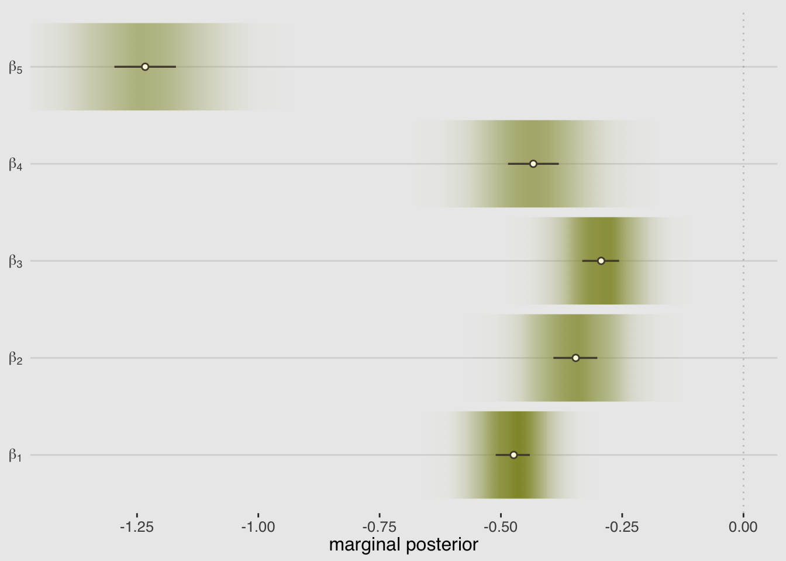
Our approach to making the op panels of Figure 12.6 will start with fitted()
nd <-
d %>%
distinct(action, contact, intention) %>%
mutate(combination = str_c(action, contact, intention, sep = "_"))
f <-
fitted(b12.5,
newdata = nd,
summary = F)
# what have we done?
f %>% str() num [1:4000, 1:6, 1:7] 0.0911 0.0951 0.0962 0.0893 0.088 ...
- attr(*, "dimnames")=List of 3
..$ : chr [1:4000] "1" "2" "3" "4" ...
..$ : NULL
..$ : chr [1:7] "1" "2" "3" "4" ...f <-
rbind(f[, , 1],
f[, , 2],
f[, , 3],
f[, , 4],
f[, , 5],
f[, , 6],
f[, , 7]) %>%
data.frame() %>%
set_names(pull(nd, combination)) %>%
mutate(response = rep(1:7, each = n() / 7),
draw = rep(1:4000, times = 7)) %>%
pivot_longer(-c(draw, response),
names_to = c("action", "contact", "intention"),
names_sep = "_",
values_to = "pk") %>%
mutate(intention = intention %>% as.integer())
# how do the data look, now?
glimpse(f)Rows: 168,000
Columns: 6
$ response <int> 1, 1, 1, 1, 1, 1, 1, 1, 1, 1, 1, 1, 1, 1, 1, 1, 1, 1, 1, 1, …
$ draw <int> 1, 1, 1, 1, 1, 1, 2, 2, 2, 2, 2, 2, 3, 3, 3, 3, 3, 3, 4, 4, …
$ action <chr> "0", "0", "1", "0", "1", "0", "0", "0", "1", "0", "1", "0", …
$ contact <chr> "1", "1", "0", "0", "0", "0", "1", "1", "0", "0", "0", "0", …
$ intention <int> 0, 1, 0, 0, 1, 1, 0, 1, 0, 0, 1, 1, 0, 1, 0, 0, 1, 1, 0, 1, …
$ pk <dbl> 0.09111462, 0.30637145, 0.10017888, 0.06364459, 0.18461757, …# to order our factor levels for `facet`
levels <- c("action=0, contact=0", "action=1, contact=0", "action=0, contact=1")
p1 <-
f %>%
# unnecessary for these plots
dplyr::filter(response < 7) %>%
# this will help us define the three panels of the triptych
mutate(facet = factor(str_c("action=", action, ", contact=", contact),
levels = levels)) %>%
# these next three lines allow us to compute the cumulative probabilities
group_by(draw, facet, intention) %>%
arrange(draw, facet, intention, response) %>%
mutate(probability = cumsum(pk)) %>%
ungroup() %>%
# these next three lines are how we randomly selected 50 posterior draws
nest(data = -draw) %>%
slice_sample(n = 50) %>%
unnest(data) %>%
# plot!
ggplot(aes(x = intention, y = probability)) +
geom_line(aes(group = interaction(draw, response), color = probability),
alpha = 1/10) +
geom_point(data = d %>% # wrangle the original data to make the dots
group_by(intention, contact, action) %>%
count(response) %>%
mutate(probability = cumsum(n / sum(n)),
facet = factor(str_c("action=", action, ", contact=", contact),
levels = levels)) %>%
dplyr::filter(response < 7),
color = canva_pal("Green fields")(4)[2]) +
scale_color_gradient(low = canva_pal("Green fields")(4)[4],
high = canva_pal("Green fields")(4)[1]) +
scale_x_continuous("intention", breaks = 0:1) +
scale_y_continuous(breaks = c(0, .5, 1), limits = 0:1) +
theme(legend.position = "none") +
facet_wrap(~ facet)p <-
predict(b12.5,
newdata = nd,
ndraws = 1000,
scale = "response",
summary = F)
p %>% str() num [1:1000, 1:6] 4 2 1 4 7 5 6 5 7 4 ...
- attr(*, "dimnames")=List of 2
..$ : NULL
..$ : NULL
- attr(*, "levels")= chr [1:7] "1" "2" "3" "4" ...p2 <-
p %>%
data.frame() %>%
set_names(pull(nd, combination)) %>%
pivot_longer(everything(),
names_to = c("action", "contact", "intention"),
names_sep = "_",
values_to = "response") %>%
mutate(facet = factor(str_c("action=", action, ", contact=", contact),
levels = levels)) %>%
ggplot(aes(x = response, fill = intention)) +
geom_bar(width = 1/3, position = position_dodge(width = .4)) +
scale_fill_manual(values = canva_pal("Green fields")(4)[2:1]) +
scale_x_continuous("response", breaks = 1:7) +
theme(legend.position = "none") +
facet_wrap(~ facet)(p1 / p2) & theme(panel.background = element_rect(fill = "grey94"))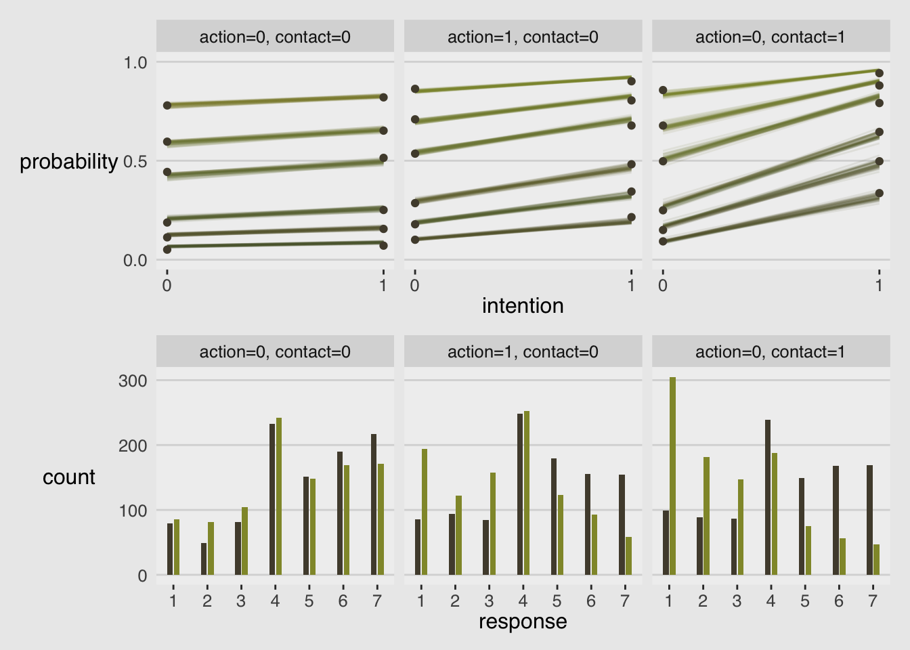
p1 <-
f %>%
mutate(facet = factor(str_c("action=", action, ", contact=", contact),
levels = levels)) %>%
group_by(draw, facet, intention) %>%
summarise(mean_response = sum(pk * response)) %>%
ungroup() %>%
nest(data = -draw) %>%
slice_sample(n = 50) %>%
unnest(data) %>%
ggplot(aes(x = intention, y = mean_response)) +
geom_line(aes(group = draw, color = mean_response),
alpha = 1/10) +
scale_color_gradient(low = canva_pal("Green fields")(4)[4],
high = canva_pal("Green fields")(4)[1]) +
scale_x_continuous("intention", breaks = 0:1) +
scale_y_continuous("response", breaks = 1:7, limits = c(1, 7)) +
theme(legend.position = "none") +
facet_wrap(~ facet)`summarise()` has grouped output by 'draw', 'facet'. You can override using the
`.groups` argument.p2 <-
f %>%
mutate(facet = factor(str_c("action=", action, ", contact=", contact),
levels = levels)) %>%
ggplot(aes(x = response, y = pk, fill = factor(intention))) +
stat_ccdfinterval(.width = .95, justification = 1, size = 1/4,
shape = 21, point_fill = canva_pal("Green fields")(4)[3], point_size = 1/3,
position = "dodge", width = .75) +
scale_fill_manual(values = canva_pal("Green fields")(4)[2:1]) +
scale_x_continuous("response", breaks = 1:7) +
scale_y_continuous("count", breaks = 0:3 / 10, labels = 0:3 * 100, limits = c(0, NA)) +
theme(legend.position = "none") +
facet_wrap(~ facet)p1 / p2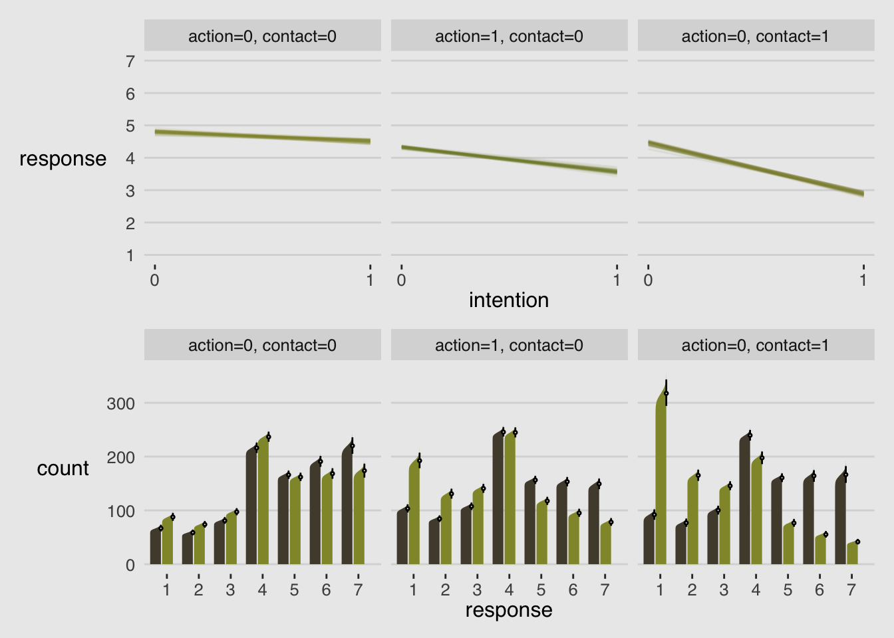
12.3.3.1 Rethinking: Staring into the abyss.
12.4 Ordered categorical predictors
distinct(d, edu) edu
1 Middle School
2 Bachelor's Degree
3 Some College
4 Master's Degree
5 High School Graduate
6 Graduate Degree
7 Some High School
8 Elementary Schoold <-
d %>%
mutate(edu_new =
recode(edu,
"Elementary School" = 1,
"Middle School" = 2,
"Some High School" = 3,
"High School Graduate" = 4,
"Some College" = 5,
"Bachelor's Degree" = 6,
"Master's Degree" = 7,
"Graduate Degree" = 8) %>%
as.integer())
# what did we do?
d %>%
distinct(edu, edu_new) %>%
arrange(edu_new) edu edu_new
1 Elementary School 1
2 Middle School 2
3 Some High School 3
4 High School Graduate 4
5 Some College 5
6 Bachelor's Degree 6
7 Master's Degree 7
8 Graduate Degree 8library(gtools)
Attaching package: 'gtools'The following object is masked _by_ '.GlobalEnv':
logitThe following objects are masked from 'package:brms':
ddirichlet, rdirichletset.seed(1805)
delta <- rdirichlet(10, alpha = rep(2, 7))
str(delta) num [1:10, 1:7] 0.1053 0.2504 0.1917 0.1241 0.0877 ...delta %>%
data.frame() %>%
set_names(1:7) %>%
mutate(row = 1:n()) %>%
pivot_longer(-row, names_to = "index") %>%
ggplot(aes(x = index, y = value, group = row,
alpha = row == 3, color = row == 3)) +
geom_line() +
geom_point() +
scale_alpha_manual(values = c(1/3, 1)) +
scale_color_manual(values = canva_pal("Green fields")(4)[1:2]) +
ylab("probability") +
theme(legend.position = "none")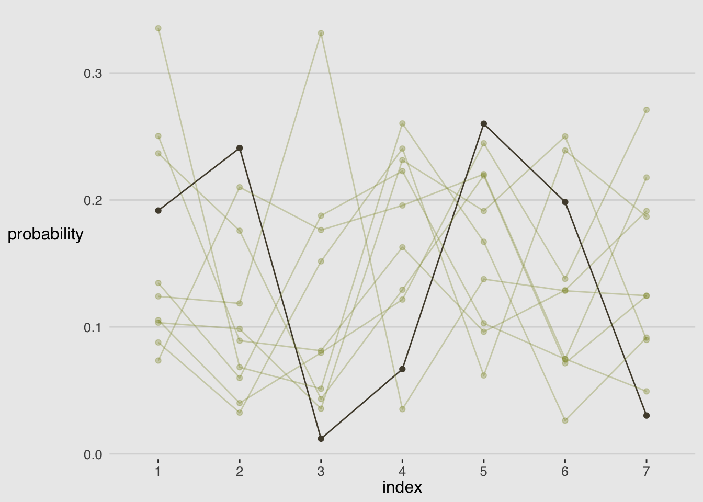
The brms package has a rdirichlet() function, too.
set.seed(12)
brms::rdirichlet(n = 1e4, alpha = rep(2, 7)) %>%
data.frame() %>%
set_names(1:7) %>%
pivot_longer(everything()) %>%
mutate(name = name %>% as.double(),
alpha = str_c("alpha[", name, "]")) %>%
ggplot(aes(x = value, color = name, group = name, fill = name)) +
geom_density(alpha = .8) +
scale_fill_gradient(low = canva_pal("Green fields")(4)[2],
high = canva_pal("Green fields")(4)[3]) +
scale_color_gradient(low = canva_pal("Green fields")(4)[2],
high = canva_pal("Green fields")(4)[3]) +
scale_x_continuous("probability", limits = c(0, 1),
breaks = c(0, .5, 1),
labels = c("0", ".5", "1"), ) +
scale_y_continuous(NULL, breaks = NULL) +
labs(subtitle = expression("Dirichlet"*(2*", "*2*", "*2*", "*2*", "*2*", "*2*", "*2))) +
theme(legend.position = "none") +
facet_wrap(~ alpha, labeller = label_parsed, nrow = 2)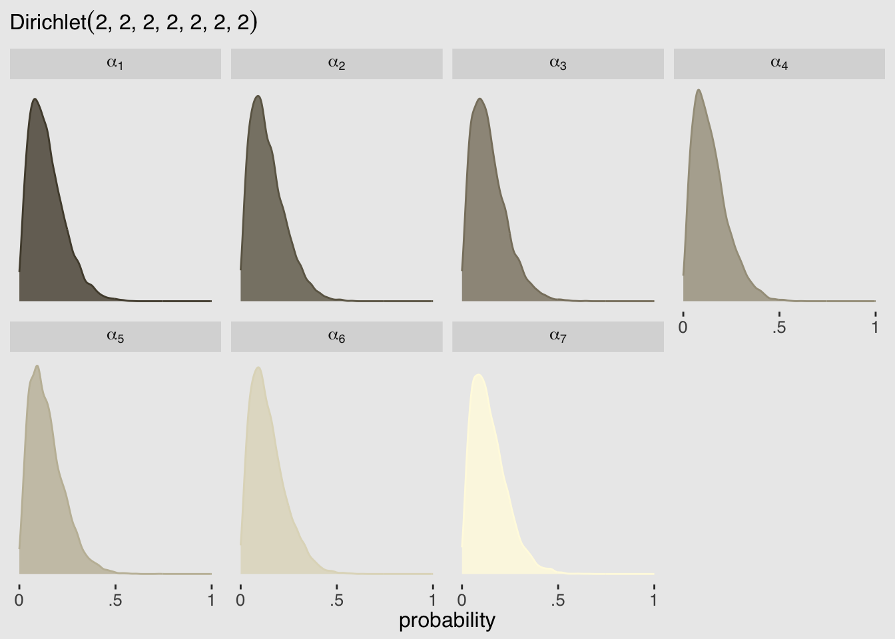
b12.6 <-
brm(data = d,
family = cumulative,
response ~ 1 + action + contact + intention + mo(edu_new), # note the mo() syntax
prior = c(prior(normal(0, 1.5), class = Intercept),
prior(normal(0, 1), class = b),
# note the new kinds of prior statements
prior(normal(0, .143), class = b, coef = moedu_new),
prior(dirichlet(2, 2, 2, 2, 2, 2, 2), class = simo, coef = moedu_new1)),
iter = 2000, warmup = 1000, chains = 4, cores = 4,
seed = 12,
file = "fits/b12.06")print(b12.6) Family: cumulative
Links: mu = logit; disc = identity
Formula: response ~ 1 + action + contact + intention + mo(edu_new)
Data: d (Number of observations: 9930)
Draws: 4 chains, each with iter = 2000; warmup = 1000; thin = 1;
total post-warmup draws = 4000
Regression Coefficients:
Estimate Est.Error l-95% CI u-95% CI Rhat Bulk_ESS Tail_ESS
Intercept[1] -3.13 0.17 -3.51 -2.85 1.00 1871 1840
Intercept[2] -2.44 0.17 -2.84 -2.17 1.00 1912 1872
Intercept[3] -1.86 0.17 -2.25 -1.59 1.00 1916 1809
Intercept[4] -0.84 0.16 -1.22 -0.58 1.00 1933 1836
Intercept[5] -0.17 0.16 -0.54 0.09 1.00 1960 1837
Intercept[6] 0.74 0.17 0.35 1.00 1.00 1965 1838
action -0.71 0.04 -0.79 -0.63 1.00 4453 2822
contact -0.96 0.05 -1.05 -0.86 1.00 4914 3070
intention -0.72 0.04 -0.79 -0.65 1.00 4687 2876
moedu_new -0.05 0.03 -0.11 -0.01 1.00 1907 1851
Monotonic Simplex Parameters:
Estimate Est.Error l-95% CI u-95% CI Rhat Bulk_ESS Tail_ESS
moedu_new1[1] 0.26 0.15 0.04 0.58 1.00 2495 2603
moedu_new1[2] 0.14 0.09 0.02 0.36 1.00 4737 2399
moedu_new1[3] 0.19 0.11 0.03 0.44 1.00 4299 2740
moedu_new1[4] 0.16 0.09 0.03 0.38 1.00 2678 2622
moedu_new1[5] 0.04 0.04 0.00 0.14 1.00 3286 2080
moedu_new1[6] 0.09 0.06 0.01 0.24 1.00 4026 2853
moedu_new1[7] 0.12 0.08 0.02 0.30 1.00 3953 2660
Further Distributional Parameters:
Estimate Est.Error l-95% CI u-95% CI Rhat Bulk_ESS Tail_ESS
disc 1.00 0.00 1.00 1.00 NA NA NA
Draws were sampled using sampling(NUTS). For each parameter, Bulk_ESS
and Tail_ESS are effective sample size measures, and Rhat is the potential
scale reduction factor on split chains (at convergence, Rhat = 1).as_draws_df(b12.6) %>%
transmute(bE = bsp_moedu_new * 7) %>%
median_qi(.width = .89) %>%
mutate_if(is.double, round, digits = 2)Warning: Dropping 'draws_df' class as required metadata was removed.# A tibble: 1 × 6
bE .lower .upper .width .point .interval
<dbl> <dbl> <dbl> <dbl> <chr> <chr>
1 -0.35 -0.69 -0.11 0.89 median qi Formal statistical notation of Categorical ordered variables \[ \begin{align} \text{response}_i & \sim \text{Categorical}(p) \\ \text{logit}(p_k) & = \alpha_k - \phi_i \\ \phi_i & = \beta_1 \text{action}_i + \beta_2 \text{contact}_i + \beta_3 \text{intention}_i + \beta_4\text{mo}(\text{edu_new}_i, \delta) \\ \alpha_k & \sim \text{Normal}(0, 1.5) \\ \beta_1, ..., \beta_3 & \sim \text{Normal}(0, 1) \\ \beta_4 & \sim \text{Normal}(0, 0.143) \\ \delta & \sim \text{Dirichlet}(2, 2, 2, 2, 2, 2, 2), \end{align} \] where \(mo(x, \delta)\) is an operator indicating some predictor \(x\) has undergone the monotonic transform and \(\delta\) is our vector of simplex parameters \(\delta_1, ..., \delta_7\). That is, \(\beta_4 \text{mo}(\text{edu_new}_i, \delta)\) is our alternative brms-oriented way of epxressing McElreath’s \(\beta_E \Sigma_{j=0}^{\text{E}_i-1} \delta_j\).
my_lower <- function(data, mapping, ...) {
# get the x and y data to use the other code
x <- eval_data_col(data, mapping$x)
y <- eval_data_col(data, mapping$y)
# compute the correlations
corr <- cor(x, y, method = "p", use = "pairwise")
abs_corr <- abs(corr)
# plot the cor value
ggally_text(
label = formatC(corr, digits = 2, format = "f") %>% str_replace(., "0.", "."),
mapping = aes(),
size = 4,
color = canva_pal("Green fields")(4)[2]) +
scale_x_continuous(NULL, breaks = NULL) +
scale_y_continuous(NULL, breaks = NULL)
}
my_diag <- function(data, mapping, ...) {
ggplot(data = data, mapping = mapping) +
geom_density(fill = canva_pal("Green fields")(4)[1],
linewidth = 0) +
scale_x_continuous(NULL, breaks = NULL) +
scale_y_continuous(NULL, breaks = NULL)
}
my_upper <- function(data, mapping, ...) {
ggplot(data = data, mapping = mapping) +
geom_hex(bins = 18) +
scale_fill_gradient(low = canva_pal("Green fields")(4)[4],
high = canva_pal("Green fields")(4)[3]) +
scale_x_continuous(NULL, breaks = NULL) +
scale_y_continuous(NULL, breaks = NULL) +
theme(panel.background = element_rect(fill = canva_pal("Green fields")(4)[2]))
}library(GGally)Registered S3 method overwritten by 'GGally':
method from
+.gg ggplot2delta_labels <- c("Elem", "MidSch", "SHS", "HSG", "SCol", "Bach", "Mast", "Grad")
as_draws_df(b12.6) %>%
select(contains("simo_moedu_new1")) %>%
set_names(str_c(delta_labels[2:8], "~(delta[", 1:7, "])")) %>%
ggpairs(upper = list(continuous = my_upper),
diag = list(continuous = my_diag),
lower = list(continuous = my_lower),
labeller = label_parsed) +
theme(strip.text = element_text(size = 8))Warning: Dropping 'draws_df' class as required metadata was removed.Scale for x is already present.
Adding another scale for x, which will replace the existing scale.Scale for y is already present.
Adding another scale for y, which will replace the existing scale.
Scale for x is already present.
Adding another scale for x, which will replace the existing scale.
Scale for y is already present.
Adding another scale for y, which will replace the existing scale.
Scale for x is already present.
Adding another scale for x, which will replace the existing scale.
Scale for y is already present.
Adding another scale for y, which will replace the existing scale.
Scale for x is already present.
Adding another scale for x, which will replace the existing scale.
Scale for y is already present.
Adding another scale for y, which will replace the existing scale.
Scale for x is already present.
Adding another scale for x, which will replace the existing scale.
Scale for y is already present.
Adding another scale for y, which will replace the existing scale.
Scale for x is already present.
Adding another scale for x, which will replace the existing scale.
Scale for y is already present.
Adding another scale for y, which will replace the existing scale.
Scale for x is already present.
Adding another scale for x, which will replace the existing scale.
Scale for y is already present.
Adding another scale for y, which will replace the existing scale.
Scale for x is already present.
Adding another scale for x, which will replace the existing scale.
Scale for y is already present.
Adding another scale for y, which will replace the existing scale.
Scale for x is already present.
Adding another scale for x, which will replace the existing scale.
Scale for y is already present.
Adding another scale for y, which will replace the existing scale.
Scale for x is already present.
Adding another scale for x, which will replace the existing scale.
Scale for y is already present.
Adding another scale for y, which will replace the existing scale.
Scale for x is already present.
Adding another scale for x, which will replace the existing scale.
Scale for y is already present.
Adding another scale for y, which will replace the existing scale.
Scale for x is already present.
Adding another scale for x, which will replace the existing scale.
Scale for y is already present.
Adding another scale for y, which will replace the existing scale.
Scale for x is already present.
Adding another scale for x, which will replace the existing scale.
Scale for y is already present.
Adding another scale for y, which will replace the existing scale.
Scale for x is already present.
Adding another scale for x, which will replace the existing scale.
Scale for y is already present.
Adding another scale for y, which will replace the existing scale.
Scale for x is already present.
Adding another scale for x, which will replace the existing scale.
Scale for y is already present.
Adding another scale for y, which will replace the existing scale.
Scale for x is already present.
Adding another scale for x, which will replace the existing scale.
Scale for y is already present.
Adding another scale for y, which will replace the existing scale.
Scale for x is already present.
Adding another scale for x, which will replace the existing scale.
Scale for y is already present.
Adding another scale for y, which will replace the existing scale.
Scale for x is already present.
Adding another scale for x, which will replace the existing scale.
Scale for y is already present.
Adding another scale for y, which will replace the existing scale.
Scale for x is already present.
Adding another scale for x, which will replace the existing scale.
Scale for y is already present.
Adding another scale for y, which will replace the existing scale.
Scale for x is already present.
Adding another scale for x, which will replace the existing scale.
Scale for y is already present.
Adding another scale for y, which will replace the existing scale.
Scale for x is already present.
Adding another scale for x, which will replace the existing scale.
Scale for y is already present.
Adding another scale for y, which will replace the existing scale.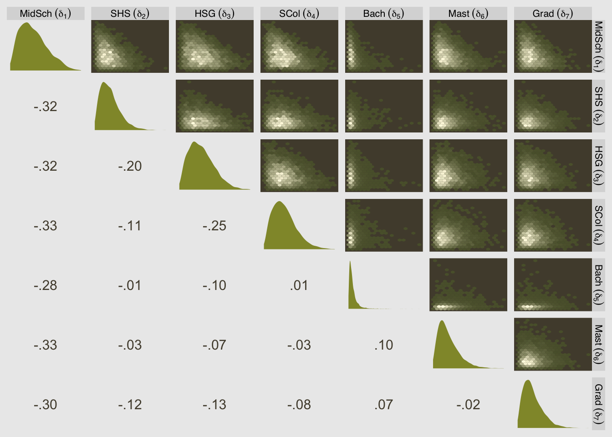
Here we add a normalized version of edu_new called edu_norm
d <-
d %>%
mutate(edu_norm = (edu_new - 1) / 7)
# what does this look like?
d %>%
distinct(edu, edu_new, edu_norm) %>%
arrange(edu_new) edu edu_new edu_norm
1 Elementary School 1 0.0000000
2 Middle School 2 0.1428571
3 Some High School 3 0.2857143
4 High School Graduate 4 0.4285714
5 Some College 5 0.5714286
6 Bachelor's Degree 6 0.7142857
7 Master's Degree 7 0.8571429
8 Graduate Degree 8 1.0000000Now fit the more conventional model in which we treat edu_norm as a simple continuous predictor
b12.7 <-
brm(data = d,
family = cumulative,
response ~ 1 + action + contact + intention + edu_norm,
prior = c(prior(normal(0, 1.5), class = Intercept),
prior(normal(0, 1), class = b)),
iter = 2000, warmup = 1000, chains = 4, cores = 4,
seed = 12,
file = "fits/b12.07")fixef(b12.7)[7:10, ] Estimate Est.Error Q2.5 Q97.5
action -0.7074674 0.03881671 -0.7846915 -0.63304426
contact -0.9585709 0.04760632 -1.0506591 -0.86179171
intention -0.7199077 0.03743654 -0.7931882 -0.64717358
edu_norm -0.1160395 0.09505294 -0.3058758 0.07069596nd <-
tibble(edu_new = 1:8,
action = 0,
contact = 0,
intention = 0)
f <-
fitted(b12.6,
newdata = nd)
f %>% str() num [1:8, 1:4, 1:7] 0.0425 0.0469 0.0491 0.0524 0.0552 ...
- attr(*, "dimnames")=List of 3
..$ : NULL
..$ : chr [1:4] "Estimate" "Est.Error" "Q2.5" "Q97.5"
..$ : chr [1:7] "P(Y = 1)" "P(Y = 2)" "P(Y = 3)" "P(Y = 4)" ...# b12.6
f12.6 <-
rbind(f[, , 1],
f[, , 2],
f[, , 3],
f[, , 4],
f[, , 5],
f[, , 6],
f[, , 7]) %>%
data.frame() %>%
mutate(edu = factor(rep(1:8, times = 7)),
response = rep(1:7, each = 8))
# b12.7
nd <-
nd %>%
mutate(edu_norm = 1:8)
f <-
fitted(b12.7, newdata = nd)
f12.7 <-
rbind(f[, , 1],
f[, , 2],
f[, , 3],
f[, , 4],
f[, , 5],
f[, , 6],
f[, , 7]) %>%
data.frame() %>%
mutate(edu = factor(rep(1:8, times = 7)),
response = rep(1:7, each = 8))# this will help with scale_color_manual()
colors <-
scales::seq_gradient_pal(canva_pal("Green fields")(4)[4],
canva_pal("Green fields")(4)[3])(seq(0, 1, length.out = 8))
bind_rows(f12.6, f12.7) %>%
mutate(fit = rep(c("b12.6 with `mo()` syntax",
"b12.7 with conventional syntax"),
each = n() / 2)) %>%
ggplot(aes(x = response, y = Estimate,
ymin = Q2.5, ymax = Q97.5,
color = edu, group = edu)) +
geom_pointrange(fatten = 3/2, position = position_dodge(width = 3/4)) +
scale_color_manual("education", values = colors, labels = delta_labels) +
scale_x_continuous(breaks = 1:7) +
scale_y_continuous("probability", limits = c(0, .43)) +
theme(legend.background = element_blank(),
legend.position = "right") +
facet_wrap(~ fit)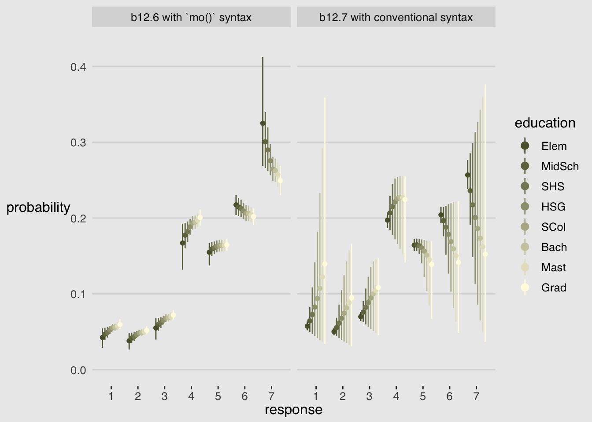
b12.6 <- add_criterion(b12.6, "loo")
b12.7 <- add_criterion(b12.7, "loo")
loo_compare(b12.6, b12.7, criterion = "loo") %>% print(simplify = F) elpd_diff se_diff elpd_loo se_elpd_loo p_loo se_p_loo looic
b12.6 0.0 0.0 -18540.6 38.1 11.0 0.1 37081.3
b12.7 -4.6 1.7 -18545.2 38.1 10.1 0.1 37090.4
se_looic
b12.6 76.2
b12.7 76.2model_weights(b12.6, b12.7, weights = "loo") %>% round(digits = 2)b12.6 b12.7
0.99 0.01 as_draws_df(b12.6) %>%
select(contains("new1")) %>%
set_names(1:7) %>%
mutate(draw = 1:n(),
`0` = 0) %>%
pivot_longer(-draw, names_to = "delta") %>%
arrange(delta) %>%
group_by(draw) %>%
mutate(cum_sum = cumsum(value)) %>%
ggplot(aes(x = delta, y = cum_sum)) +
stat_pointinterval(.width = .95, size = 1,
color = canva_pal("Green fields")(4)[1]) +
stat_pointinterval(.width = .5,
color = canva_pal("Green fields")(4)[4],
point_color = canva_pal("Green fields")(4)[2]) +
scale_x_discrete(NULL, labels = parse(text = str_c("delta[", 0:7, "]"))) +
ylab("cumulative sum")Warning: Dropping 'draws_df' class as required metadata was removed.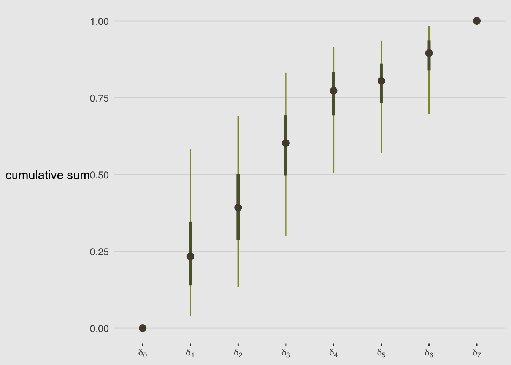
This is another way to show the largest effects of education are when going from Elementary School to Middle School \((\delta_0 \rightarrow \delta_1)\) and when going from Some High School to High School Graduate \((\delta_2 \rightarrow \delta_3)\).
d %>%
distinct(edu, edu_new) %>%
arrange(edu_new) %>%
mutate(`delta[j]` = edu_new - 1) edu edu_new delta[j]
1 Elementary School 1 0
2 Middle School 2 1
3 Some High School 3 2
4 High School Graduate 4 3
5 Some College 5 4
6 Bachelor's Degree 6 5
7 Master's Degree 7 6
8 Graduate Degree 8 7